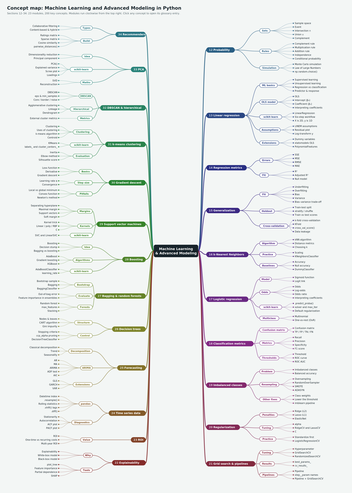

Data Science Glossary: Machine Learning and Advanced Modeling
Key terms, functions and methods from the machine learning unit, running from probability to recommender systems. This glossary picks up where the Unit 2 glossary (sections 1–11: Python, pandas and EDA) left off, so numbering starts at section 12, and terms already defined there are linked rather than repeated. Each of the 402 entries says what the term means, where it appears in the course, and (where relevant) shows working code.
How to read the examples. Examples follow the course notebooks and assume the standard imports below. Extra libraries are imported inside the entries that need them; statsmodels, imbalanced-learn, xgboost, arch and shap may need installing with pip install.
import numpy as np
import pandas as pd
import matplotlib.pyplot as plt
import seaborn as sns
from sklearn import metrics
from sklearn.model_selection import train_test_split, cross_val_score, GridSearchCV
from sklearn.preprocessing import StandardScaler
from sklearn.linear_model import LinearRegression, LogisticRegression
from sklearn.neighbors import KNeighborsClassifier, KNeighborsRegressor
from sklearn.tree import DecisionTreeClassifier
from sklearn.pipeline import Pipeline
from sklearn.metrics import accuracy_score
Most notebooks read a CSV from the course data/ folder, and the entries use the same variable names: elec (elecdemand.csv), bike (bikeshare.csv), admissions (grad_admissions.csv), wine (winequality_merged.csv), titanic (titanic_clean.csv), aapl (AAPL.csv) and so on. Scaled data is named X_train_sc or Z_train. To try an example without the course files, swap in a built-in dataset such as load_breast_cancer(), load_iris(), load_digits(), make_classification() or make_blobs() from sklearn.datasets, or sm.datasets.macrodata for time series.
Library versions. Code is written to run on current releases (scikit-learn 1.8, pandas 3). Where a course notebook uses syntax that has since changed or been removed, the entry carries a Watch out note with the up-to-date version.
Contents
- Probability
- Machine learning foundations and linear regression
- Regression metrics
- Generalization, bias–variance and cross-validation
- k-Nearest Neighbors
- Logistic regression
- Classification metrics
- Imbalanced classes
- Regularization
- Hyperparameter tuning: grid search and pipelines
- Model explainability
- Project value and ROI
- Time series: data handling and stationarity
- Time series: forecasting models
- Decision trees
- Ensembles: bagging and random forests
- Ensembles: boosting
- Support vector machines
- Gradient descent and optimization
- Unsupervised learning and k-means clustering
- DBSCAN and hierarchical clustering
- Principal component analysis (PCA)
- Recommender systems
Concept map · A–Z index
Concept map
The whole unit on one page: 23 modules, grouped into themes, with the key concepts of each. Open the clickable SVG version to jump straight to entries in the HTML glossary.

The same map as a linked outline:
- 12. Probability
- Sets: Sample space, Event, Intersection ∩, Union ∪, Complement
- Rules: Complement rule, Multiplication rule, Addition rule, Independence, Conditional probability
- Simulation: Monte Carlo simulation, Law of Large Numbers, np.random.choice()
- 13. Linear regression
- ML basics: Supervised learning, Unsupervised learning, Regression vs classification, Predictor & response
- OLS model: OLS, Intercept (β₀), Coefficient (β₁), Interpreting coefficients
- scikit-learn: LinearRegression, Six-step workflow, X is 2D, y is 1D
- Assumptions: LINEM assumptions, Residual plot, Log-transform y
- Extensions: Dummy variables, statsmodels OLS, PolynomialFeatures
- 14. Regression metrics
- Errors: SSE, MSE, RMSE, MAE
- Fit: R², Adjusted R², Null model
- 15. Generalization
- Fit: Underfitting, Overfitting, Bias, Variance, Bias–variance trade-off
- Holdout: Train-test split, stratify / shuffle, Train vs test scores
- Cross-validation: k-fold cross-validation, KFold, cross_val_score(), Data leakage
- 16. k-Nearest Neighbors
- Algorithm: kNN algorithm, Distance metrics, Choosing k
- Practice: Scaling, KNeighborsClassifier
- Baselines: Accuracy, Null accuracy, DummyClassifier
- 17. Logistic regression
- Model: Sigmoid function, Logit link
- Odds: Odds, Log-odds, Odds ratio, Interpreting coefficients
- scikit-learn: .predict_proba(), solver and max_iter, Default regularization
- Multiclass: Multinomial, One-vs-rest (OvR)
- 18. Classification metrics
- Confusion matrix: Confusion matrix, TP / FP / TN / FN
- Metrics: Recall, Precision, Specificity, F1 score
- Thresholds: Threshold, ROC curve, ROC AUC
- 19. Imbalanced classes
- Problem: Imbalanced classes, Balanced accuracy
- Resampling: Oversampling, RandomOverSampler, SMOTE, ADASYN
- Other fixes: Class weights, Lower the threshold, imblearn pipeline
- 20. Regularization
- Penalties: Ridge (L2), Lasso (L1), ElasticNet
- Tuning: alpha, RidgeCV and LassoCV, C
- Practice: Standardize first, LogisticRegressionCV
- 21. Grid search & pipelines
- Tuning: Hyperparameter, GridSearchCV, RandomizedSearchCV
- Results: best_params_, cv_results_
- Pipelines: Pipeline, step__param names, Pipeline + GridSearchCV
- 22. Explainability
- Why: Explainability, White-box model, Black-box model
- Tools: plot_tree, Feature importance, Partial dependence, SHAP
- 23. ROI
- Value: ROI, One-time vs recurring costs, Multi-year ROI
- 24. Time series data
- pandas: Datetime index, .resample(), Rolling statistics, .shift() lags, .diff()
- Diagnostics: Stationarity, Autocorrelation, ACF plot, PACF plot
- 25. Forecasting
- Decomposition: Classical decomposition, Trend, Seasonality
- ARIMA: AR, MA, ARIMA, ADF test, AIC
- Extensions: GLS, GARCH, VAR
- 26. Decision trees
- Structure: Nodes & leaves, CART algorithm, Gini impurity
- Control: Stopping criteria, ccp_alpha pruning, DecisionTreeClassifier
- 27. Bagging & random forests
- Bootstrap: Bootstrap sample, Bagging, BaggingClassifier
- Evaluate: Out-of-bag error, Feature importance in ensembles
- Forests: Random forest, max_features, Stacking
- 28. Boosting
- Idea: Boosting, Decision stump, Bagging vs boosting
- Algorithms: AdaBoost, Gradient boosting, XGBoost
- scikit-learn: AdaBoostClassifier, learning_rate
- 29. Support vector machines
- Margins: Separating hyperplane, Maximal margin, Support vectors, Soft margin
- Kernels: Kernel trick, Linear / poly / RBF, C
- scikit-learn: SVC and LinearSVC
- 30. Gradient descent
- Basics: Loss function, Derivative, Gradient descent
- Step size: Learning rate α, Convergence
- Pitfalls: Local vs global minimum, Convex function, Newton's method
- 31. k-means clustering
- Clustering: Clustering, Uses of clustering, k-means algorithm, Centroid
- scikit-learn: KMeans, labels_ and cluster_centers_
- Evaluation: Inertia, Elbow method, Silhouette score
- 32. DBSCAN & hierarchical
- DBSCAN: DBSCAN, eps & min_samples, Core / border / noise
- Hierarchical: Agglomerative clustering, Linkage, Dendrogram
- Metrics: External cluster metrics
- 33. PCA
- Idea: Dimensionality reduction, Principal component
- scikit-learn: PCA(), Explained variance, Scree plot, Loadings
- Maths: SVD, Reconstruction
- 34. Recommenders
- Types: Collaborative filtering, Content-based & hybrid
- Build: Ratings matrix, Sparse matrix, Cosine similarity, pairwise_distances()
12. Probability
The language of uncertainty that every model in this unit is built on: experiments, events, set operations, the three probability rules, and estimating probabilities by simulation when the maths gets hard. Examples come from the dice, coin and urn problems in the probability notebook.
Probability
Concept
If you repeated an experiment infinitely many times, the probability of an event is the proportion of those repeats in which the event happens. It is always a number between 0 and 1: a fair coin lands heads with probability 0.5. Written formally, P(A) = lim (number of times A occurs ÷ n) as n → ∞. We can't run anything infinitely often, so in practice we either calculate probabilities by hand or estimate them by running many simulated trials.
See also: Simulation (Monte Carlo), Law of Large Numbers (LLN)
Probability notation P(A)
Concept
P(A) reads "the probability that event A occurs". P(A | B) reads "the probability of A given that B has already happened". P(A ∩ B) is the probability that both happen and P(A ∪ B) the probability that at least one happens.
Experiment
Concept
Any clearly defined process with an outcome: flipping a coin twice, rolling a die, drawing a marble. ("Lab coat optional.") Not to be confused with a designed experiment from Unit 2, though the idea is related.
See also: Experiment (Unit 2)
Outcome
Concept
A single possible result of an experiment, such as rolling a 4 or flipping HT.
Sample space
Concept
The set of all possible outcomes of an experiment, usually written S (or Ω). Flip a coin twice: S = {HH, HT, TH, TT}. Roll one die: S = {1, 2, 3, 4, 5, 6}.
Event
Concept
Any collection of outcomes, i.e. a subset of the sample space. For one die roll: A = {1}, B = {an even number} = {2, 4, 6}, C = {a prime number} = {2, 3, 5}.
Set and element
Concept, Python
A set is an unordered collection of distinct objects; each object in it is an element. {Chloe, 17, 😂} is a set with three elements. Python's built-in set behaves the same way and supports the set operations below.
A = {2, 4, 6, 8}
B = {2, 3, 5, 7}
A & B # {2} intersection
A | B # {2, 3, 4, 5, 6, 7, 8} union
S = set(range(1, 9))
S - A # {1, 3, 5, 7} complement of A within S
S - (A | B) # {1}
See also: Set (Unit 2)
Intersection (A ∩ B)
Concept
The elements in both A and B ("A and B"). For an 8-sided die with A = {2, 4, 6, 8} and B = {2, 3, 5, 7}, A ∩ B = {2}.
Union (A ∪ B)
Concept
The elements in A or B, or both. With the sets above, A ∪ B = {2, 3, 4, 5, 6, 7, 8}.
Complement (Aᶜ)
Concept
Everything in the sample space that is not in A. With S = {1, …, 8} and A = {2, 4, 6, 8}, Aᶜ = {1, 3, 5, 7}, and (A ∪ B)ᶜ = {1}.
Disjoint (mutually exclusive) events
Concept
Events that can't happen together, so P(A ∩ B) = 0. "Both marbles are blue" and "both marbles are red" are disjoint. For disjoint events, the union rule simplifies to P(A ∪ B) = P(A) + P(B).
Key probability facts
Concept
Three facts that always hold: P(S) = 1 (something happens), P(∅) = 0 (the probability that nothing happens is zero), and 0 ≤ P(A) ≤ 1 for any event A. If a calculation gives you a probability of 1.3 or −0.2, something has gone wrong.
Conditional probability
Concept
The probability of A given that B has already happened, written P(A | B). Drawing marbles without replacement is the classic case: once a blue marble is out, the chance the next one is blue drops from 12/24 to 11/23.
Statistical independence
Concept
Two events are independent if one happening doesn't change the probability of the other: P(A | B) = P(A). A coin flip and a die roll are independent. Pizza for lunch and pizza for dinner aren't (one makes the other less likely); shark attacks and ice-cream sales aren't (warm weather drives both); today's and tomorrow's temperature aren't. Independence comes up again and again: it's the I in the LINE assumptions, and it's exactly what time series data violate.
See also: Independence (I), Time series
Complement rule
Concept
Rule 1: P(Aᶜ) = 1 − P(A). Often the easiest route to a hard probability: P(at least one six in four rolls) = 1 − P(no sixes) = 1 − (5/6)⁴.
Multiplication rule (intersections)
Concept
Rule 2: P(A ∩ B) = P(A) · P(B | A). With an urn of 12 red and 12 blue marbles, drawing twice without replacement, P(both blue) = (12/24) × (11/23) = 11/46 ≈ 0.239. If A and B are independent this reduces to P(A) · P(B).
Addition rule (unions)
Concept
Rule 3: P(A ∪ B) = P(A) + P(B) − P(A ∩ B). You subtract the intersection because adding P(A) and P(B) counts the overlap twice. P(both marbles the same colour) = P(both blue) + P(both red) − 0 = 0.239 + 0.239 = 0.478, since the two events are disjoint.
Sampling with and without replacement
Concept, NumPy
With replacement, each item goes back before the next draw, so draws are independent and the same item can be picked twice (a bootstrap sample works this way). Without replacement, each item can be picked only once, so later draws depend on earlier ones (the urn problems).
urn = np.array([np.repeat("red", 12), np.repeat("blue", 12)]).ravel()
np.random.choice(urn, size=2, replace=False) # two different marbles
np.random.choice(urn, size=2, replace=True) # could be the same marble twice
See also: Bootstrap sample
Simulation (Monte Carlo)
Concept, Python
Estimating a probability by running an experiment many times in code and counting how often the event happens: P(A) ≈ (times A occurs) ÷ n. When problems get too hard to do by hand, "why do the maths?" Every problem in the probability notebook follows the same pattern: a counter, a loop, an if, and a division.
dice = [1, 2, 3, 4, 5, 6]
def odd_roll(n):
count = 0
for i in range(n):
if np.random.choice(dice) % 2 != 0: # is the roll odd?
count += 1
return count / n
odd_roll(1_000_000) # ≈ 0.5
See also: Law of Large Numbers (LLN)
Law of Large Numbers (LLN)
Concept
As you repeat an experiment more and more times, the simulated probability of an event gets closer and closer to the true probability. That's why odd_roll(1_000_000) is closer to 0.5 than odd_roll(1_000), and it's the justification for every simulation in the course. (The real theorem has conditions and several versions; this is the gist.)
np.random.choice()
NumPy
Picks random items from a list or array. size sets how many, replace sets whether an item can be picked twice, and p sets the probability of each item, which lets you simulate an unfair coin.
np.random.choice(dice) # one die roll
np.random.choice(["heads", "tails"], p=[0.2, 0.8]) # unfair coin, 20% heads
np.random.choice(urn, size=2, replace=False) # two draws, no replacement
See also: Random number generators (Unit 2)
np.random.randint() and np.random.uniform()
NumPy
np.random.randint(low, high) returns a random integer from low up to but not including high: randint(1, 7) is a die roll and randint(0, 2) a coin flip. np.random.uniform(low, high) returns a random decimal, used in the "break a stick in two places" interview problem.
np.random.randint(1, 7) # 1, 2, 3, 4, 5 or 6
np.random.randint(0, 2) # 0 or 1
np.random.uniform(0, 1) # e.g. 0.3745...
Watch out: The upper bound is exclusive. randint(1, 6) never rolls a 6.
while loop
Python
Repeats a block as long as a condition is true, which suits "keep flipping until you get heads". Use while True: with break when the stopping condition is easier to check inside the loop.
rolls = 1
while np.random.randint(0, 2) == 0: # keep flipping while we get tails
rolls += 1
Watch out: If the condition can never become false (say, a probability of heads of 0), the loop runs forever. Guard against impossible inputs first.
See also: for loop (Unit 2), continue and break (Unit 2)
13. Machine learning foundations and linear regression
What machine learning is, the two big families of models, and the first model in the toolkit: ordinary least squares linear regression. Covers fitting, interpreting and checking a model in scikit-learn and statsmodels, using the electricity demand (elecdemand.csv) and bikeshare (bikeshare.csv) notebooks.
Machine learning
Concept
Letting a computer use data to learn the relationship between some predictors (x-variables) and a response (y-variable). The slides call it "a fancy way of saying statistical modeling". Examples: predicting a house's sale price from size, location and rooms, or whether a customer will cancel their subscription next month from their recent activity.
Statistical modeling
Concept
Combining data with statistical theory to model the real-world relationship between predictors and a response: "a more down-to-earth way of saying machine learning". Statisticians and ML engineers often describe the same thing in different words, which is why so many terms below have synonyms.
Predictor and response (and their many names)
Concept
Because ML grew out of several fields, the same thing has many names. The predictor is also called an independent variable, feature, covariate or input (e.g. square footage). The response is also called a dependent variable, target, label or output (e.g. house price). Conventionally, predictors go in X and the response in y.
See also: Feature (Unit 2), Target (Unit 2)
Supervised learning
Concept
Learning from data where the answer is known: "given X, can we predict Y?" Every row has a label, and the model learns to map features to that label. Supervised learning splits into regression and classification.
See also: Unsupervised learning, Regression vs classification tasks
Unsupervised learning
Concept
Learning from data with no y-variable: "what does X look like, really?" Used to find groups (clustering) or to compress many variables into a few (dimensionality reduction). There's no right answer to score against, so results need human interpretation.
See also: Clustering, Principal component analysis (PCA)
Reinforcement learning
Concept
A third family where a model takes actions according to a policy, sees the results, and adjusts to do better next time (game-playing agents, robotics). The slides call it "a field still in the process of being invented"; it isn't covered in this course.
See also: Semi-supervised learning
Regression vs classification tasks
Concept
The two kinds of supervised learning. Regression: the y-variable is numeric (tomorrow's closing price, this year's harvest yield, a home's price). Classification: the y-variable is a category (will they buy, will it rain, will they pass). A yes/no target is binary classification; three or more classes is multiclass.
See also: Regression vs classification (Unit 2), Binary and multiclass classification
Ingredients of a supervised model
Concept
From the slides, to build a supervised model you need: a problem statement, a data set, a choice of independent variables, a choice of model, and a way to measure how good the model is. Leaving out the last one is the most common mistake.
Linear regression
Concept, scikit-learn
A supervised, white-box regression model that assumes y changes in a straight-line way with each x: y = β₀ + β₁x₁ + … + βₚxₚ + ε. Its big selling point is that the coefficients are interpretable. Its weakness is the list of assumptions (LINEM) that need to hold before you trust them.
See also: Ordinary least squares (OLS), LINEM assumptions
Ordinary least squares (OLS)
Concept
The standard way to fit a linear regression: choose the β values that minimize the sum of squared residuals, hence "least squares". It is one of the very few models with a closed-form solution, so it doesn't need gradient descent.
See also: Matrix form of OLS, Line of best fit
Simple linear regression
Concept
Linear regression with one predictor: ŷ = β̂₀ + β̂₁x. In the notebook: electricity demand predicted from temperature, giving ŷ = 2.32 + 0.11·temp.
Multiple linear regression
Concept
Linear regression with more than one predictor: ŷ = β̂₀ + β̂₁x₁ + … + β̂ₚxₚ. Adds one assumption (no multicollinearity) and changes how you interpret coefficients ("holding all else constant").
Error term (ε)
Concept
The part of y the model can't explain: random noise inherent in any prediction "because nothing will be perfect". The model is y = β₀ + β₁x + ε; observation = model + error. Its estimate from data is the residual.
See also: Residual (Unit 2)
Intercept (β₀)
Concept, scikit-learn
The expected value of y when every x is zero, i.e. where the line crosses the y-axis. It doesn't always make sense: with y = 12000 + 250x for house price and square footage, "a house with no floor area sells for $12,000" is meaningless. In scikit-learn: model.intercept_.
Slope / coefficient (β₁)
Concept, scikit-learn
The rate of change between x and y: for every 1-unit increase in x, we expect y to change by β₁. In the house example, each extra square foot adds about $250. In scikit-learn: model.coef_ (an array, one value per feature).
Hat notation (ŷ, β̂)
Concept
A hat means "estimated" or "predicted". ŷ ("y-hat") is a prediction; β̂ is a coefficient estimated from data. A bold y means the whole vector of responses, and n is the sample size.
Line of best fit
Concept, seaborn
The straight line that minimizes the sum of squared residuals. seaborn draws it for you, which is a quick visual check before fitting anything.
sns.regplot(x="temp", y="demand", data=elec, ci=None,
scatter_kws={"s": 1}, line_kws={"color": "red"})
plt.axhline(elec["demand"].mean(), color="orange", lw=3) # the null model, for comparison
sns.lmplot() does the same but as a figure-level plot.
Interpreting coefficients
Concept
Simple regression: "For every 1-unit increase in x, we expect y to increase by β." Multiple regression: add "holding all other variables constant". Dummy variables: the effect is relative to the baseline category. From the bikeshare model: "holding temperature constant, it being Summer means 105 fewer riders per hour relative to Winter"; "for every one-degree increase in temperature, about 14 more riders per hour".
See also: Dummy variables in regression, Coefficients are not importance
Coefficients are not importance
Concept
A common pitfall: coefficients don't tell you which variable has the biggest impact. Each one is in its feature's own units, so a coefficient of 250 for square feet and 15,000 for bedrooms can't be compared. You can only compare them if all features are on the same scale (for example, after standardizing).
See also: Feature importance
LinearRegression
scikit-learn
scikit-learn's OLS model, in sklearn.linear_model. It follows the six-step workflow below.
from sklearn.linear_model import LinearRegression
X = elec[["temp"]] # 2D: a DataFrame
y = elec["demand"] # 1D: a Series
lr = LinearRegression()
lr.fit(X, y)
lr.intercept_, lr.coef_ # (2.32..., array([0.11...]))
See also: The modeling workflow in scikit-learn
The modeling workflow in scikit-learn
scikit-learn, Concept
The six core steps used for linear regression and then reused for every model in the course:
- Assemble predictors
X (a DataFrame) and target y (a Series).
- Instantiate the model.
- Fit the model on training data.
- Check out and interpret the coefficients.
- Make predictions with
.predict().
- Evaluate the model, ideally against a baseline.
X_train, X_test, y_train, y_test = train_test_split(X, y, random_state=42)
model = LinearRegression() # 2
model.fit(X_train, y_train) # 3
dict(zip(X.columns, model.coef_)) # 4
y_pred = model.predict(X_test) # 5
metrics.root_mean_squared_error(y_test, y_pred) # 6
See also: fit / predict (Unit 2)
X is 2D, y is 1D
scikit-learn
scikit-learn expects X to be two-dimensional (n rows × p features) even when there is only one feature, and y to be one-dimensional (length n). That's why the notebooks write elec[["temp"]] (double brackets → DataFrame) but elec["demand"] (single brackets → Series).
Watch out: lr.fit(elec["temp"], y) raises "Expected 2D array, got 1D array". Use double brackets or .reshape(-1, 1). The same applies when predicting one new value: lr.predict([[25]]), not lr.predict([25]).
See also: reshape(-1, 1) (Unit 2)
.coef_ and .intercept_
scikit-learn
Fitted attributes (note the trailing underscore: scikit-learn's convention for "learned from data"). Pair coefficients with column names to read them.
pd.Series(model.coef_, index=X.columns).sort_values()
.score()
scikit-learn
A built-in evaluation shortcut on every model. For regressors it returns R²; for classifiers it returns accuracy. lr.score(X_test, y_test) is the same as metrics.r2_score(y_test, lr.predict(X_test)).
Watch out: One notebook labels model.score() output "Adj R Sq". It's ordinary R², not adjusted R².
See also: R² (coefficient of determination), Accuracy
Null model (baseline) for regression
Concept
The simplest possible regression model: always predict the mean of y, whatever the input. Every real model should beat it. Its MSE is the variance of y, and its R² is 0 by definition.
y_bar = np.mean(y)
null_mse = np.mean((y - y_bar) ** 2)
See also: Baseline model (Unit 2), Null accuracy
LINEM assumptions
Concept
What has to hold for OLS results (especially the coefficients) to be trustworthy:
- Linearity: the relationship between x and y is roughly a straight line.
- Independence: observations don't affect each other.
- Normality: residuals are roughly normally distributed.
- Equal variance (homoscedasticity): residuals have about the same spread for every predicted value.
- Multicollinearity absent: predictors aren't strongly correlated with each other (multiple regression only).
See also: Linear model assumptions (Unit 2)
Linearity (L)
Concept, matplotlib
Checked with a scatter plot of each x against y (or sns.pairplot). A gentle curve may be acceptable; a strong curve suggests a transformation or polynomial terms.
plt.scatter(elec["temp"], elec["demand"], s=1)
Independence (I)
Concept
Usually checked by thinking about how the data were collected rather than with a plot. The most common violation is time series data, where each observation depends on the previous ones. (The bikeshare data are hourly, so this assumption is "probably violated".)
See also: Statistical independence, Generalized least squares (GLS)
Normality of residuals (N)
Concept, matplotlib
Plot a histogram of residuals; it should look roughly bell-shaped and centred on zero. Strong skew is a warning sign.
resids = y - y_pred
plt.hist(resids, bins=50)
Equal variance / homoscedasticity (E)
Concept, matplotlib
Residuals should have roughly the same spread at every predicted value. Check with a residual plot: you want a random, patternless cloud around zero. A fan shape (spread growing with ŷ) is heteroscedasticity; a curve means the linearity assumption is also failing.
See also: Residual plot, Homoscedasticity (Unit 2)
Residual plot
matplotlib
Predicted values on the x-axis, residuals on the y-axis, with a horizontal line at zero. The single most useful diagnostic for a regression model.
plt.scatter(y_pred, resids, s=1)
plt.axhline(0, color="orange")
No multicollinearity (M)
Concept, pandas
Predictors shouldn't be strongly correlated with each other (e.g. number of cars a garage holds vs garage size). Multicollinearity doesn't hurt predictions but "completely destroys model inference": coefficients become unstable and unreliable. Check with a correlation matrix or heatmap and keep only one of a correlated pair.
X.corr()
np.corrcoef(bike.temp, bike.atemp) # temp and "feels like" temp: almost 1
See also: Multicollinearity (Unit 2)
Log-transforming the target
Concept, NumPy
A common fix when residuals are right-skewed, fan-shaped, or the relationship is slightly curved: model log(y) instead of y ("log regression"). Remember to undo it with np.exp() before reporting predictions.
y_log = np.log(df["apps"])
lr_log = LinearRegression().fit(X_train, y_train_log)
preds = np.exp(lr_log.predict(X_test)) # back to the original units
Watch out: Forgetting to exponentiate means your "predictions" are in log units. And np.log fails on zeros; use np.log1p if y can be 0.
See also: Log transformation (Unit 2)
Design matrix
Concept
The data matrix X used to fit a model: each row is an observation, each column a variable, and (mathematically) a first column of 1s for the intercept. scikit-learn adds the intercept column for you; statsmodels needs sm.add_constant().
Matrix form of OLS
Concept
With a design matrix, OLS is written compactly as y = Xβ + ε, and its closed-form solution is β̂ = (XᵀX)⁻¹Xᵀy. You won't compute it by hand, but it explains why perfectly collinear columns break the model: XᵀX can't be inverted.
Xd = np.column_stack([np.ones(len(X)), X]) # add the column of 1s
beta_hat = np.linalg.inv(Xd.T @ Xd) @ Xd.T @ y # same as LinearRegression
Dummy variables in regression
Concept, pandas
To use a categorical predictor with k levels, create k − 1 dummy (0/1) columns. The dropped level becomes the baseline category, and every dummy coefficient is interpreted relative to it. In the bikeshare model, Winter (season 1) is dropped, so season_3 means "Summer compared with Winter".
X = bike[["season", "temp"]]
X = pd.get_dummies(X, columns=["season"], drop_first=True, dtype=int)
Watch out: In recent pandas, get_dummies returns True/False columns unless you pass dtype=int. Models handle booleans fine, but 0/1 is easier to read.
See also: One-hot encoding (Unit 2), Rank deficiency
Rank deficiency
Concept
What happens if you keep all k dummy columns: they always add up to 1, which is exactly the intercept column. The design matrix is "rank-deficient" (a column is a combination of others), so the model can't be fitted uniquely. Dropping one dummy fixes it. In Unit 2 this was called the dummy variable trap.
See also: Dummy variable trap (Unit 2)
Feature scale in linear regression
Concept
Changing the units of a feature (Celsius to Fahrenheit) doesn't change OLS predictions; it just rescales the coefficient. The bikeshare model predicts the same riders for 25 °C as the Fahrenheit model does for 77 °F. Scale does matter for regularized models, kNN, SVMs, k-means and PCA.
See also: Standardize before regularizing
statsmodels OLS
statsmodels
An alternative to scikit-learn that gives a full statistical summary: coefficients with standard errors, p-values, confidence intervals and R². Note the argument order (y first) and that you must add the intercept column yourself.
import statsmodels.api as sm
X = sm.add_constant(elec[["temp", "workday"]])
y = elec["demand"]
ols = sm.OLS(y, X).fit()
ols.summary()
Watch out: Without sm.add_constant(), the model is forced through the origin (no intercept).
Reading a statsmodels results object
statsmodels
The fitted results expose everything in the summary as attributes. .params gives coefficients, .rsquared gives R², .pvalues gives p-values, and .predict() gives predictions (new data needs a constant column too).
results.params # intercept and slopes
results.rsquared
results.pvalues
Xnew = sm.add_constant([20, 21])
results.predict(Xnew)
See also: p-value (Unit 2)
Polynomial regression
Concept
Fitting a curve with linear regression by adding powers of x as extra features: x, x², x³, … The model is still "linear" in its coefficients. Higher degrees make the model more flexible ("responsive") and much more prone to overfitting.
See also: PolynomialFeatures, Model complexity
PolynomialFeatures
scikit-learn
A transformer that creates powers and interaction terms (products such as x₁·x₂) of your features. Used in the review lab for a degree-5 fit and in the regularization notebook to deliberately overfit the wine data.
from sklearn.preprocessing import PolynomialFeatures
poly = PolynomialFeatures(degree=2, include_bias=False)
X_poly = poly.fit_transform(X)
poly.get_feature_names_out(X.columns) # 'fixed_acidity', 'fixed_acidity^2', 'fixed_acidity density', ...
Watch out: The number of columns explodes: 12 features at degree 2 become 90. Combine with regularization.
Interaction term
Concept
A feature made by multiplying two others (x₁x₂), letting the effect of one depend on the value of the other. Written in model formulas like y ~ x1 + x2 + x1x2. Tree-based models capture interactions automatically.
14. Regression metrics
How to put a number on "how good is this regression model?": distance-based error measures, R², and comparison with the null model. Examples use the advertising data (Advertising.csv), where sales is predicted from TV, radio and newspaper spend. "All models are wrong, but some are useful."
Euclidean distance
Concept, NumPy
The straight-line distance between two points, from Pythagoras: √Σ(aᵢ − bᵢ)². Treating y and ŷ as two points in n-dimensional space, their distance is a natural measure of error, and it's the starting point for SSE, MSE and RMSE. It reappears as the distance measure in kNN and k-means.
y = np.array([4, 18, 9, 2, 7, 5])
y_hat = np.array([3, 15, 8, 1, 8, 12])
np.sqrt(np.sum((y - y_hat) ** 2))
See also: Distance metrics (Euclidean, Manhattan, Minkowski)
Sum of squared errors (SSE)
Concept, NumPy
Add up the squared residuals: SSE = Σ(yᵢ − ŷᵢ)². This is the quantity OLS minimizes. Its size depends on how many rows you have, so it's not great for comparing models on different data.
sse = np.sum((y - y_hat) ** 2)
Mean squared error (MSE)
Concept, scikit-learn
The average squared residual: MSE = (1/n)Σ(yᵢ − ŷᵢ)². Lower is better (as with any metric with "error" in its name). Squaring punishes large errors heavily. It's the traditional metric for estimating the bias–variance trade-off.
np.mean((y - y_hat) ** 2)
metrics.mean_squared_error(y, y_hat)
Root mean squared error (RMSE)
Concept, scikit-learn
The square root of the MSE. Its advantage is that it's in the same units as the target, so an RMSE of 2,000 when predicting house prices means "on average, the model is off by roughly ±$2,000".
np.sqrt(metrics.mean_squared_error(y, y_hat))
metrics.root_mean_squared_error(y, y_hat) # scikit-learn 1.4+
Watch out: root_mean_squared_error only exists in scikit-learn 1.4 and later. On older versions use np.sqrt(mean_squared_error(...)) (or mean_squared_error(..., squared=False), which has since been removed).
Mean absolute error (MAE)
Concept, scikit-learn
The average absolute residual: (1/n)Σ|yᵢ − ŷᵢ|. Also in the target's units, and less sensitive to a few huge errors than RMSE. The notebook calls it the mean absolute deviation.
metrics.mean_absolute_error(y, y_hat)
R² (coefficient of determination)
Concept, scikit-learn
The proportion of the variability in y that the model explains: R² = 1 − SSE / SST. It usually runs from 0 to 1 (1 = perfect). "35.2% of the variability in electricity demand can be explained by temperature." On test data it can be negative if the model is worse than predicting the mean.
1 - np.sum((y - y_hat)**2) / np.sum((y - np.mean(y))**2) # by hand
metrics.r2_score(y, y_hat)
lm.score(X, y)
Watch out: Training R² always goes up when you add features, even pure noise. Judge a model on test or cross-validated R².
See also: Adjusted R², Evaluation metrics (Unit 2)
Total sum of squares (SST)
Concept
Σ(yᵢ − ȳ)²: the SSE of the null model that always predicts the mean. R² compares your model's SSE with this. (The notebook calls it ssto.)
Adjusted R²
Concept
A version of R² that penalizes extra features, so it only rises if a new feature improves the fit more than chance would: adj R² = 1 − (1 − R²)(n − 1)/(n − p − 1), with p features. statsmodels reports it in .summary() (results.rsquared_adj); scikit-learn doesn't have it built in.
r2 = metrics.r2_score(y, y_hat)
n, p = X.shape
adj_r2 = 1 - (1 - r2) * (n - 1) / (n - p - 1)
sklearn.metrics
scikit-learn
The module holding every scoring function: regression (mean_squared_error, root_mean_squared_error, mean_absolute_error, r2_score), classification (accuracy_score, recall_score, precision_score, f1_score, confusion_matrix, roc_auc_score), and clustering (silhouette_score and friends). The course usually imports the whole module: from sklearn import metrics.
Choosing a regression metric
Concept
Use RMSE or MAE when you need to explain errors in the target's units to a stakeholder (MAE if a few big misses shouldn't dominate). Use MSE when comparing models mathematically or as a loss. Use R² for "how much of the variation do we explain". Whatever you choose, always compare against the null model and compute it on test data.
15. Generalization, bias–variance and cross-validation
Why a model that's perfect on its training data can be useless, how to measure that, and how to choose a model that will work on data it has never seen. Includes the Bias–Variance Tradeoff deck's "fitting sine" exercise and the College applications model workflow.
Generalization
Concept
A model generalizes well if what it learned from a limited amount of training data works on new data. That's the goal of nearly every model you'll build: aiming for a balance between being underfit and overfit. "Having a good training MSE is unimpressive."
Underfitting
Concept
The model is too simple to capture the shape of the data (a straight line through a parabola). High error on training data and on new data. It has high bias.
Overfitting
Concept
The model memorizes the training data, noise included, so it fails on new values. Low training error, high error on new data. It has high variance. Signs: training score much better than test score. "If we overfit our model, we're just modeling noise!"
See also: Reading train vs test scores, Regularization
Balanced model
Concept
The sweet spot between under- and overfitting: medium error on the training data and low error on new data. It captures the real pattern without memorizing the noise.
Bias
Concept
Error from a model's inability to capture the true relationship: plainly, "model badness". A straight line fitted to a sine curve is biased no matter how much data you give it. High bias = underfit. Loosely, bias is about "points within a model".
Variance (model variance)
Concept
Error from a model being too sensitive to the particular training data it saw. If you split your data in half and fit the same kind of model to each half, variance is why you get different models. High variance = overfit. Loosely, variance is about "a point between many models".
Watch out: This is not the same as the variance of a column of data from Unit 2, although it uses the same maths (spread around an average).
Irreducible error
Concept
Error caused by the randomness of the universe, sometimes just called noise. No model can remove it. It sets a floor on how good any model can be.
Bias–variance decomposition
Concept
The expected squared error of a prediction splits into three parts:
Err(x) = Bias² + Variance + Irreducible error
where Bias² = (E[f̂(x)] − f(x))², Variance = E[(f̂(x) − E[f̂(x)])²], and the irreducible error is σ²ₑ. A residual mixes all three. You can't calculate bias and variance directly from one dataset; holdout methods estimate their combined effect.
Bias–variance trade-off
Concept
Making a model more complex lowers bias but raises variance; simplifying it does the reverse. Total error is U-shaped against complexity, and the goal is the optimum model complexity at the bottom of the U. Almost every tuning choice in the course (k in kNN, alpha in regularization, tree depth, C in SVMs) is a move along this trade-off.
See also: Model complexity, Training vs test error curve
Bullseye diagram
Concept
The classic picture of bias and variance: the bullseye is the true value and each dart is one model's prediction. Low bias, low variance: tight cluster on the centre (the goal). Low bias, high variance: scattered around the centre. High bias, low variance: tight cluster off-centre. High bias, high variance: scattered and off-centre. Which one you get depends on the training data available.
Model complexity
Concept
How complicated the model is to describe. More complexity gives finer control over predictions, which can be a bad thing. Things that raise complexity: more variables, "wiggliness" (polynomial terms x², x³), less regularization, and more complex architectures (neural nets vs OLS).
Training vs test error curve
Concept
Plot error against model complexity. Training error (blue) keeps falling as complexity rises. Test / prediction error (red) falls at first, bottoms out, then rises again: past that point the model is overfitting. Answers the slide's question "why do we care about variance if more complexity always gives a more accurate model?": it's only more accurate on the data it has already seen.
Fitting sine exercise
Concept
From the Bias–Variance Tradeoff deck (after Caltech's Learning From Data). Fit two hypotheses to a sine curve using only two points: H₀: f(x) = b (a flat line) and H₁: f(x) = ax + b (a sloped line). With the full curve, H₁ wins (E_out 0.20 vs 0.50). But averaged over every possible pair of points, H₀ has bias 0.50 and variance 0.25 while H₁ has bias 0.21 and variance 1.69, so the simpler model has lower total error. The lesson: with little data, choose a model whose complexity matches the data you have, not the target you imagine.
Out-of-sample data
Concept
Data the model wasn't trained on. Performance on out-of-sample data is the honest measure of a model. Test sets and cross-validation folds are stand-ins for it.
Holdout method
Concept
Any technique that sets data aside during training so it can be used to evaluate the model afterwards: train-test split, k-fold cross-validation, out-of-bag samples. Bias and variance are theoretical quantities, and holdout methods are how we estimate them in practice.
Train-test split
scikit-learn
Divide the data into a training set (used to build the model) and a testing set (used to validate it). Fit on training data, compute a metric on both, and compare. The default split is 75/25.
from sklearn.model_selection import train_test_split
X_train, X_test, y_train, y_test = train_test_split(
X, y, test_size=0.3, random_state=1653
)
See also: train_test_split() (Unit 2), test_size, stratify and shuffle
test_size, stratify and shuffle
scikit-learn
Key arguments of train_test_split. test_size (or train_size) sets the proportion held out (default 0.25). stratify=y keeps the class proportions the same in both sets, which is important for imbalanced classification. shuffle=False keeps the original order, which is required for time series (you can't train on the future).
train_test_split(X, y, test_size=0.2, stratify=y, random_state=42)
train_test_split(y, test_size=0.1, shuffle=False) # time series
See also: Time series train/test split, random_state (Unit 2)
Train-test ratio rule of thumb
Concept
You want as much training data as possible, but enough test data to represent everything the model will meet. Small data (say 200 rows): hold out more, maybe 50/50. Huge data (100M rows): 99/1 is fine because 1M test rows is plenty. Otherwise 75/25 or 70/30 is usually fine.
Reading train vs test scores
Concept
Compare the same metric on training and test data. Test much worse than train: overfit (high variance). Both bad: underfit (high bias). Both similar and good: likely generalizes. From the slides: train RMSE 12.3 / test RMSE 658.2 is badly overfit; 233.9 / 252.1 is not overfit but weak; 132.7 / 200.5 is the best of the three because it has the best test score. Occasionally the test score beats the training score by chance; that's fine.
k-fold cross-validation
Concept
Split the data into k folds (usually 5 or 10). Train on k − 1 folds and test on the remaining one; repeat so every fold is the test set once; then average the k scores. Example from the slides: fold MSEs 42.7, 45.1, 72.8, 38.2, 49.2 give a cross-validated MSE of 49.6. More robust than one split, and no data is "thrown away".
See also: cross_val_score(), Cross-validation (Unit 2)
Fold
Concept
One of the k equal-sized chunks of data in k-fold cross-validation. k is not a tuning parameter: choose it large enough that averaging is meaningful but small enough that each fold isn't tiny.
KFold
scikit-learn
Generates the train/test indices for each fold. Use shuffle=True with a random_state unless the order matters. You can loop over kf.split() to see each fold's model.
from sklearn.model_selection import KFold
kf = KFold(n_splits=5, shuffle=True, random_state=1318)
scores = []
for train_index, test_index in kf.split(X, y):
lm = LinearRegression().fit(X.iloc[train_index], y.iloc[train_index])
scores.append(lm.score(X.iloc[test_index], y.iloc[test_index]))
np.mean(scores)
See also: StratifiedKFold
cross_val_score()
scikit-learn
Runs the whole k-fold loop in one line and returns one score per fold. cv can be a number of folds or a KFold object; scoring chooses the metric (default: R² for regressors, accuracy for classifiers).
from sklearn.model_selection import cross_val_score
scores = cross_val_score(LinearRegression(), X, y, cv=kf)
scores.mean()
cross_val_score(knn, X_train_sc, y_train, cv=10).mean()
See also: scoring parameter
scoring parameter
scikit-learn
Tells cross_val_score, GridSearchCV and friends which metric to use, as a string: "r2", "neg_mean_squared_error", "neg_root_mean_squared_error", "accuracy", "recall", "f1", "roc_auc", "balanced_accuracy", and more.
Watch out: Error metrics are negated (neg_…) because scikit-learn always maximizes the score. Flip the sign back: -cross_val_score(model, X, y, scoring="neg_mean_squared_error").mean().
Leave-one-out cross-validation (LOOCV)
Concept
The special case of k-fold where k = n: every observation is its own test set. Rarely used now because it means fitting n models.
Three-way split (validation set)
Concept
Hold out a final test set first, then use cross-validation (or a separate validation set) on the rest to tune and choose models. The test set is touched only once, at the very end, so its score is an unbiased estimate. This is what you are doing whenever you run GridSearchCV on X_train and score on X_test.
Cross-validation pros and cons
Concept
Pros: a measure of bias/variance that is more robust to outliers, and every observation gets used for training. Cons: you have to fit the model k times ("a huge disadvantage!"), and because the folds share data, the averaged score carries a little bias (usually ignored). Train-test split is still useful when CV is too slow, for a quick confusion matrix, or as a final check.
Data leakage (in model evaluation)
Concept
Information that won't be available at prediction time sneaks into training, making the model look better than it is. Causes from the slides: future information used to predict the past; preprocessing, normalization or splitting errors that let test data into training (e.g. fitting a scaler before splitting); process changes that add new information to the training set; and very large datasets, where subtle leaks are hard to catch.
See also: Data leakage (Unit 2), Pipeline + GridSearchCV
Big data considerations
Concept
More data is generally good, but large datasets bring their own problems: subtle data leakage is harder to catch, compute costs and time can grow exponentially, and models can overfit spurious correlations that exist in the training data but not the real world.
Refitting for production
Concept
Train-test split and cross-validation are for choosing a model. Once you've chosen, the usual practice is to refit that model configuration on all the data you have before deploying it, so it learns from as much information as possible.
Signal and noise
Concept
You can think of ML as modeling the signal (the real relationship between X and y) and separating it from the noise. An overfit model has modeled the noise. It's always mathematically possible to fit training data perfectly; the art is fitting only the signal.
Modeling workflow (end to end)
Concept, scikit-learn
The College applications walkthrough strings everything together: load data → clean (fix ? values, cast types, drop NaNs) → engineer features (binarize private) → EDA (boxplots, histograms, correlation heatmap, pairplot) → build X and y → train-test split → scale (fit on train only) → fit → score train and test → check LINE assumptions → fix problems (log-transform y) → refit.
X = df.drop(columns=["university", "accept", "enroll", "apps"])
y = df["apps"]
X_train, X_test, y_train, y_test = train_test_split(X, y, random_state=42)
ss = StandardScaler()
X_train = ss.fit_transform(X_train)
X_test = ss.transform(X_test) # transform only: no peeking at test data
lr = LinearRegression().fit(X_train, y_train)
lr.score(X_train, y_train), lr.score(X_test, y_test)
See also: StandardScaler (Unit 2)
16. k-Nearest Neighbors
The first classification model: label a new point by asking its closest neighbours. Covers distance, choosing k, why scaling is essential, and how to tell whether a classifier beats a do-nothing baseline. Examples use the iris data (iris.csv) and the cell phone churn data (cell_phone_churn.csv).
Classification
Concept
The branch of supervised learning that predicts a categorical response, often yes/no. "Given this person's demographics, will they vote for A or B?" "Given their financial status, will they default?" "Will it rain tomorrow?"
See also: Regression vs classification tasks
Binary and multiclass classification
Concept
Binary classification has two classes (0/1, yes/no, spam/not spam). Multiclass has three or more (iris species, handwritten digits 0–9). Some models handle multiclass natively (kNN, trees); logistic regression needs a little help.
See also: Multinomial logistic regression, One-vs-rest (OvR)
k-nearest neighbors (kNN)
Concept
Classify a new point using its k closest neighbours in the training data: "birds of a feather flock together". The algorithm: compute the distance from the new point to every training point, rank them, take the k nearest, and predict the majority class (classification) or the average (regression). Like guessing your favourite music by asking your five closest friends.
See also: KNeighborsClassifier
Non-parametric model
Concept
A model that makes no assumptions about the distribution of the data and isn't summarized by a fixed equation with parameters. kNN is non-parametric: there are no coefficients, it just stores the training data. Decision trees are non-parametric too. Linear and logistic regression are parametric.
Distance metrics (Euclidean, Manhattan, Minkowski)
Concept
How "nearest" is measured. Euclidean: straight-line distance, √Σ(aᵢ − bᵢ)², the default. Manhattan ("taxi distance"): Σ|aᵢ − bᵢ|, moving only along grid lines. Minkowski: a general formula, (Σ|aᵢ − bᵢ|ᵖ)^(1/p), that is Manhattan when p = 1 and Euclidean when p = 2. In KNeighborsClassifier, choose with p.
See also: Euclidean distance, Cosine similarity
Choosing k
Concept
k is chosen by you, not learned from the data. Small k (k = 1): wiggly boundaries that chase outliers, so low bias and high variance. Large k (k = 50): smooth boundaries that ignore outliers, so higher bias and lower variance. Try several values and pick the one with the best test (or cross-validated) score. The default is 5; odd values avoid ties in binary problems.
scores = []
for k in range(3, 32, 2):
knn = KNeighborsClassifier(n_neighbors=k).fit(X_train_sc, y_train)
scores.append((k, knn.score(X_train_sc, y_train), knn.score(X_test_sc, y_test)))
pd.DataFrame(scores, columns=["k", "acc_train", "acc_test"])
See also: Hyperparameter
Decision boundary
Concept
The line or surface where a classifier switches from predicting one class to another. Plotting it shows how flexible a model is: kNN's boundaries are jagged at k = 1 and smooth at k = 50; logistic regression's is a straight line; an RBF-kernel SVM's can curve.
Voronoi diagram
Concept
A map that divides space into regions, each made up of all the points closest to one particular data point (or centroid). The decision regions of 1-nearest-neighbour and the clusters of k-means both form Voronoi cells.
Scaling for distance-based models
Concept, scikit-learn
kNN measures distance, so a feature measured in thousands (square footage) swamps one measured in units (bedrooms). Always standardize first, fitting the scaler on training data only. The same applies to k-means, SVMs, PCA and regularized models.
sc = StandardScaler()
X_train_sc = sc.fit_transform(X_train)
X_test_sc = sc.transform(X_test)
See also: Z-score standardization (Unit 2)
KNeighborsClassifier
scikit-learn
scikit-learn's kNN classifier (KNeighborsRegressor for regression). Key hyperparameters: n_neighbors (k, default 5), weights ("uniform": every neighbour votes equally; "distance": closer neighbours count more), and p (1 = Manhattan, 2 = Euclidean).
from sklearn.neighbors import KNeighborsClassifier
knn = KNeighborsClassifier(n_neighbors=5)
cross_val_score(knn, X_train_sc, y_train, cv=10).mean()
knn.fit(X_train_sc, y_train)
knn.score(X_test_sc, y_test) # accuracy
kNN strengths and weaknesses
Concept
Strengths: few assumptions (non-parametric); works for classification (vote) and regression (average); simple to explain. Weaknesses: slow and memory-hungry on large data, since every prediction compares against every training row; sensitive to noisy, imbalanced and irrelevant features; works poorly with many predictors (the curse of dimensionality) or many dummy columns. Best with a small number of predictors and a modest number of rows. Widely used for image and video tasks where similar pixels need to be identified.
See also: Curse of dimensionality (Unit 2)
Accuracy
Concept, scikit-learn
The proportion of predictions that are correct: (TP + TN) / total. It's what .score() returns for every classifier. Easy to explain, but misleading when classes are imbalanced: a 99%-accurate test for a rare disease might just be saying "no" to everyone.
metrics.accuracy_score(y_test, y_pred)
knn.score(X_test_sc, y_test)
See also: Null accuracy, Balanced accuracy
Null accuracy
Concept, pandas
The accuracy you'd get by always predicting the most frequent class in the training set: the baseline for any classifier. If your model doesn't beat it, it hasn't learned anything useful.
most_freq_class = y_train.value_counts().index[0]
y_test.value_counts()[most_freq_class] / len(y_test)
y_test.value_counts(normalize=True) # quick version
DummyClassifier
scikit-learn
A ready-made baseline model. strategy="most_frequent" always predicts the majority class, so its score is the null accuracy. DummyRegressor(strategy="mean") does the same for regression.
from sklearn.dummy import DummyClassifier
dummy = DummyClassifier(strategy="most_frequent")
dummy.fit(X_train, y_train)
dummy.score(X_test, y_test)
Categorical features in kNN
Concept
You can use dummy-coded categorical features in kNN, but each one adds a column, pushing up dimensionality and degrading performance; scaling 0/1 columns is also hard to justify. The notebook drops them for the churn model. Keep them only if they are critical to the problem.
cat_cols = churn.select_dtypes("object").columns
X = churn.drop(columns=cat_cols).drop(columns=["churn"])
17. Logistic regression
Regression bent into a classifier: predicting the probability that y = 1 with an S-shaped curve, and reading its coefficients as changes in odds. Examples use graduate school admissions (grad_admissions.csv, admit predicted from GPA and GRE) and the possum data.
Logistic regression
Concept, scikit-learn
A supervised, white-box classification model. It predicts the probability that an observation belongs to class 1, then assigns a class using a threshold (0.5 by default). It's linear regression passed through a link function so outputs stay between 0 and 1. Fast, interpretable and by far the most common classifier.
from sklearn.linear_model import LogisticRegression
X = admissions[["gpa"]]
y = admissions["admit"]
X_train, X_test, y_train, y_test = train_test_split(X, y, random_state=50)
logreg = LogisticRegression()
logreg.fit(X_train, y_train)
logreg.score(X_test, y_test) # accuracy
Why not linear regression for classification?
Concept
A straight line predicts any value from −∞ to ∞, so for a 0/1 target it happily predicts −0.3 or 1.4, which aren't probabilities. Logistic regression "bends" the line into an S-curve that stays between 0 and 1.
Logistic (sigmoid) function
Concept
The S-shaped curve that turns any number into a value between 0 and 1: p = e^z / (1 + e^z) = 1 / (1 + e^−z), where z = β₀ + β₁x₁ + … It's the inverse of the logit, and it converts log-odds back into probability.
def sigmoid(z):
return 1 / (1 + np.exp(-z))
Link function and the logit
Concept
A link function connects a linear equation to the kind of output you need. Logistic regression uses the logit: logit(p) = ln(p / (1 − p)) = β₀ + β₁x₁ + … + βₚxₚ. It maps a probability (0 to 1) to the whole number line (−∞ to ∞), which is exactly what a linear equation produces.
Odds
Concept
The probability that something happens divided by the probability it doesn't: odds = p / (1 − p). The odds of rolling a 1 on a fair die are (1/6)/(5/6) = 1/5, or "1 to 5" (gamblers write 5:1 against). Convert back with p = odds / (1 + odds).
Log-odds
Concept
The natural log of the odds, ln(p / (1 − p)). This is what logistic regression actually predicts as a linear function of the features. Log-odds of 0 means p = 0.5.
Odds ratio
Concept
The odds in one group divided by the odds in another. From the slides' purchase table: returning customers' odds of buying are 22/5 = 4.4, new customers' are 2/15 ≈ 0.133, so returning customers have 33 times greater odds of purchasing. Exponentiated logistic regression coefficients are odds ratios.
Interpreting logistic regression coefficients
Concept, NumPy
A one-unit increase in xᵢ changes the log-odds of success by βᵢ, which is hard to picture. Exponentiate to get an odds ratio: a one-unit increase in xᵢ makes success e^βᵢ times as likely (in odds terms), holding all else constant. In the admissions model, β ≈ 4.9 for GPA, and e^4.9 ≈ 135: each extra GPA point multiplies the odds of admission by about 135.
np.exp(logreg.coef_)
pd.Series(logreg.coef_[0], index=X.columns) # pair with feature names
From coefficients to probability
Concept, NumPy
Plug values into the equation to get log-odds, exponentiate to get odds, then convert to probability. It matches .predict_proba().
logodds = logreg.intercept_ + logreg.coef_[0] * 3.5 # GPA = 3.5
odds = np.exp(logodds)
prob = odds / (1 + odds) # ≈ 0.43
logreg.predict_proba([[3.5]])[:, 1] # same answer
.predict_proba()
scikit-learn
Returns the predicted probability of each class, one column per class in the order of model.classes_. Column 1 ([:, 1]) is P(y = 1). .predict() simply picks the class with the higher probability, i.e. uses a 0.5 threshold for binary problems.
logreg.predict(X_test)[:10] # classes: 0 or 1
np.round(logreg.predict_proba(X_test), 3) # [[P(y=0), P(y=1)], ...]
y_pred_prob = logreg.predict_proba(X_test)[:, 1]
See also: Classification threshold
Plotting the logistic curve
matplotlib
Sort the x-values, then plot predicted P(y = 1) to see the S-shape over the data.
plt.scatter(X_test, y_test, s=10)
xs = X_test.sort_values("gpa")
plt.plot(xs, logreg.predict_proba(xs)[:, 1], color="red", lw=3)
Logistic regression assumptions
Concept
Similar to OLS but fewer: Linearity between the features and the log-odds; Independence of observations; and no Multicollinearity (for multiple logistic regression). There's no normality or equal-variance assumption on residuals.
Log loss (binary cross-entropy)
Concept
The loss function logistic regression minimizes (the notebook calls it the deviance). It heavily penalizes confident wrong predictions. Unlike OLS there's no closed-form solution, so the β's are found by an iterative optimizer (the solver).
metrics.log_loss(y_test, logreg.predict_proba(X_test))
See also: Gradient descent, solver and max_iter
solver and max_iter
scikit-learn
solver picks the optimization algorithm that finds the coefficients ("lbfgs" is the default; "liblinear" supports L1 penalties on small data; "newton-cg", "saga" are others). max_iter caps the number of iterations. If you see a ConvergenceWarning, scale your features, raise max_iter, or try another solver.
LogisticRegression(max_iter=1_000)
LogisticRegression(solver="newton-cg") # used for the possum data
Regularization is on by default
scikit-learn
scikit-learn's LogisticRegression applies an L2 penalty with strength C=1.0 unless told otherwise, which shrinks coefficients and makes them harder to interpret. For a classical, unpenalized model, switch it off.
LogisticRegression(penalty=None) # scikit-learn 1.2–1.7
LogisticRegression(C=np.inf) # scikit-learn 1.8+ (penalty is deprecated)
Watch out: Older notebooks write penalty='none' (a string). That raises an error in current scikit-learn; use penalty=None or C=np.inf.
See also: C (inverse regularization strength)
Multinomial logistic regression
Concept, scikit-learn
Extends logistic regression to more than two classes by modelling all classes at once (the multinomial distribution instead of the Bernoulli). It's what LogisticRegression does automatically when y has 3+ classes with the default lbfgs solver, as in the iris example.
iris_logreg = LogisticRegression().fit(X_train, y_train) # y has 3 species
iris_logreg.coef_.shape # (3, 4): one row per class
One-vs-rest (OvR)
Concept, scikit-learn
The other multiclass "hack": for each class k, fit a binary model of "k vs everything else", then predict the class whose model gives the highest probability. Use OneVsRestClassifier.
from sklearn.multiclass import OneVsRestClassifier
ovr = OneVsRestClassifier(LogisticRegression()).fit(X_train, y_train)
Logistic regression vs decision trees
Concept
A classic interview question. Interpretability: both are white-box (coefficients vs a flowchart). Overfitting: trees overfit easily; logistic regression rarely does. Assumptions: trees have none about the data's distribution; logistic regression has some. Target: trees do regression and classification; logistic regression only classification.
18. Classification metrics
Accuracy isn't enough. The confusion matrix and the metrics built from it, how moving the probability threshold trades one kind of error for another, and the ROC curve and AUC. Examples use the breast cancer data (load_breast_cancer, malignant = 1) and the Whickham smoking data.
Confusion matrix
Concept, scikit-learn
A table of actual vs predicted classes. For a binary problem it has four cells: TN (actual 0, predicted 0), FP (actual 0, predicted 1), FN (actual 1, predicted 0), TP (actual 1, predicted 1). scikit-learn lays it out with actual classes as rows and predicted as columns, negative class first.
cm = metrics.confusion_matrix(y_test, y_pred)
pd.DataFrame(cm,
columns=["pred benign", "pred malignant"],
index=["actual benign", "actual malignant"])
tn, fp, fn, tp = cm.ravel()
ConfusionMatrixDisplay
scikit-learn, matplotlib
Plots a labelled, colour-coded confusion matrix directly from a fitted model.
from sklearn.metrics import ConfusionMatrixDisplay
ConfusionMatrixDisplay.from_estimator(knn, X_test_sc, y_test,
display_labels=["benign", "malignant"],
cmap="Blues")
ConfusionMatrixDisplay.from_predictions(y_test, y_pred) # if you only have predictions
True/false positives and negatives
Concept
Positive means "predicted the class of interest" (malignant, spam, fraud), true/false means whether that prediction was right. A false positive (type I error) is a false alarm: a benign tumour flagged as malignant. A false negative (type II error) is a miss: a malignant tumour called benign. Which is worse depends on the problem, and that decides which metric to optimize.
Misclassification rate
Concept
The share of predictions that are wrong: (FP + FN) / total = 1 − accuracy. The kNN slides call "1 minus the accuracy" the error when choosing k.
Recall (sensitivity, true positive rate)
Concept, scikit-learn
Of all actual positives, how many did we catch? TP / (TP + FN). With 42 TP and 2 FN, recall = 42/44 = 0.95. Optimize recall when missing a positive is costly (cancer screening, fraud).
metrics.recall_score(y_test, y_pred)
Precision
Concept, scikit-learn
Of all predicted positives, how many were right? TP / (TP + FP). With 42 TP and 1 FP, precision = 42/43 = 0.98. Optimize precision when false alarms are costly (spam filters deleting real email).
metrics.precision_score(y_test, y_pred)
Specificity (true negative rate)
Concept
Of all actual negatives, how many did we correctly call negative? TN / (TN + FP). With 98 TN and 1 FP, 98/99 = 0.99. scikit-learn has no specificity_score, so compute it from the confusion matrix.
tn, fp, fn, tp = metrics.confusion_matrix(y_test, y_pred).ravel()
specificity = tn / (tn + fp)
False positive rate (FPR)
Concept
FP / (FP + TN) = 1 − specificity. It's the x-axis of the ROC curve.
F1 score
Concept, scikit-learn
The harmonic mean of precision and recall: 2 · (precision · recall) / (precision + recall) = 2TP / (2TP + FP + FN). High only when both are high, so it's a good single number when you care about the positive class and classes are imbalanced.
metrics.f1_score(y_test, y_pred)
F-beta score
Concept, scikit-learn
A generalization of F1 that weights recall β times as much as precision. β = 2 favours recall; β = 0.5 favours precision.
metrics.fbeta_score(y_test, y_pred, beta=2)
classification_report()
scikit-learn
Prints precision, recall, F1 and support (number of true cases) for every class, plus averages. Used in the boosting notebook.
from sklearn.metrics import classification_report
print(classification_report(y_test, y_pred))
pos_label
scikit-learn
When the classes are strings rather than 0/1, tell the metric which one counts as "positive". The imbalanced-data notebook uses the income labels.
metrics.recall_score(y_test, preds, pos_label=">50K")
Classification threshold
Concept, NumPy
The probability cut-off for predicting class 1 (0.5 by default). Lowering it predicts more positives: recall goes up, precision and specificity go down. The cancer notebook drops it to 0.1 to catch more malignant cases, accepting more false alarms.
y_pred_prob = knn.predict_proba(X_test_sc)[:, 1]
y_pred_class = np.where(y_pred_prob > 0.1, 1, 0)
metrics.confusion_matrix(y_test, y_pred_class)
See also: Changing the threshold for imbalanced data
Precision–recall trade-off
Concept
Because both depend on the threshold, you can almost always raise one by lowering the other. Decide which error is worse before you model ("framing the problem is a necessary first step"), then choose the metric and threshold to match.
ROC curve
Concept, scikit-learn
The Receiver Operating Characteristic curve plots the true positive rate (y-axis) against the false positive rate (x-axis) at every possible threshold from 0 to 1. A perfect model hugs the top-left corner; a useless one follows the diagonal. One curve per model, and it doesn't change your model's actual predictions.
metrics.RocCurveDisplay.from_estimator(lr, X_test, y_test)
plt.plot([0, 1], [0, 1], linestyle="--") # random-guess line
Watch out: metrics.plot_roc_curve() from older tutorials has been removed; use RocCurveDisplay.from_estimator().
AUC (ROC AUC)
Concept, scikit-learn
The area under the ROC curve, a single number summarizing how well the model separates the classes across all thresholds. 1.0: perfectly separated. 0.5: the classes completely overlap (no better than chance). Below 0.5: the model has them backwards; flip its predictions and 0.2 becomes 0.8. Needs predicted probabilities, not classes.
y_pred_prob = lr.predict_proba(X_test)[:, 1]
metrics.roc_auc_score(y_test, y_pred_prob)
Choosing a classification metric
Concept
Start from the cost of each mistake. Accuracy: classes balanced and errors equally bad (e.g. digit recognition, where misreading a 4 as a 3 or a 9 is equally wrong). Recall: misses are expensive. Precision: false alarms are expensive. F1: imbalanced classes and you care about the positive class. Balanced accuracy: you care about all classes equally. ROC AUC: comparing models' ranking ability independent of threshold.
19. Imbalanced classes
When one class vastly outnumbers another, a model can look brilliant by ignoring the rare class. How to spot it, measure it properly, and fix it with resampling, synthetic data, class weights or a new threshold, using the imbalanced-learn library and the adult census income data.
Imbalanced classes
Concept, pandas
When the classes in the target aren't equally represented (also called unbalanced classes or imbalanced data). In the West Nile Virus example, 99.9% of observations are "no WNV", so predicting "no WNV" every time scores 0.999 accuracy while being useless. Very common in practice: fraud, disease, churn, equipment failure, defaults.
claims["class"].value_counts(normalize=True)
See also: Class imbalance (Unit 2)
Majority and minority class
Concept
The majority class is the common one; the minority class is the rare one, and usually the one you care about. Models learn what they see most, so they struggle to predict the minority class.
When imbalance matters
Concept
Not every imbalance needs fixing. It matters when the minority class is important and the model is under-predicting it. Diagnose with the confusion matrix and minority-class recall rather than accuracy, and always compare with a null model.
Balanced accuracy
Concept, scikit-learn
The average of the recall for each class: (1/N) Σ TPᵢ / (TPᵢ + FNᵢ). A null model that always predicts the majority class scores 0.5 for a binary problem, however imbalanced the data. Use it when you care about all classes equally, and as the scoring for grid searches on imbalanced data.
from sklearn.metrics import balanced_accuracy_score
balanced_accuracy_score(y_test, preds)
null_preds = ["<=50K"] * len(y_test)
balanced_accuracy_score(y_test, null_preds) # 0.5
Undersampling
Concept
Throwing away majority-class rows until the classes are balanced. The slides' advice: in general, don't undersample the majority class, because you lose valuable information.
Oversampling
Concept
Increasing the number of minority-class rows by sampling them with replacement, so the model sees more of them during training. Risk: the duplicated rows can lead to overfitting the minority examples.
RandomOverSampler
imbalanced-learn
Randomly duplicates minority-class rows. sampling_strategy sets the target ratio of minority to majority after resampling (1.0 = equal).
from imblearn.over_sampling import RandomOverSampler
from imblearn.pipeline import make_pipeline
pipe = make_pipeline(RandomOverSampler(random_state=34),
LogisticRegression(max_iter=1_000))
gs = GridSearchCV(pipe,
{"randomoversampler__sampling_strategy": [.25, .5, .75, 1]},
scoring="balanced_accuracy", n_jobs=-1)
gs.fit(X_train_ss, y_train)
Synthetic data generation
Concept
Instead of copying minority rows, create new, plausible ("fake") minority observations by interpolating between existing ones. The main methods are SMOTE and ADASYN.
SMOTE
imbalanced-learn
Synthetic Minority Over-sampling TEchnique. For each minority point, pick one of its nearest minority neighbours and create a new point somewhere on the line between them.
from imblearn.over_sampling import SMOTE
pipe3 = make_pipeline(SMOTE(random_state=34), LogisticRegression(max_iter=1_000))
gs3 = GridSearchCV(pipe3, {"logisticregression__C": [.1, 1, 10]},
scoring="balanced_accuracy")
gs3.fit(X_train_ss, y_train)
ADASYN
imbalanced-learn
Adaptive Synthetic sampling: like SMOTE, but generates more synthetic points next to the minority observations that a kNN classifier gets wrong, i.e. it focuses on the hard cases.
from imblearn.over_sampling import ADASYN
pipe4 = make_pipeline(ADASYN(random_state=34), LogisticRegression(max_iter=1000))
SMOTENC and SMOTEN
imbalanced-learn
SMOTE interpolates numbers, which makes no sense for categories. Use SMOTENC when features are a mix of categorical and continuous (tell it which columns are categorical) and SMOTEN when all features are categorical.
from imblearn.over_sampling import SMOTENC
SMOTENC(categorical_features=[0, 3], random_state=34)
imbalanced-learn pipeline
imbalanced-learn
imblearn.pipeline.make_pipeline (or Pipeline) works like scikit-learn's but supports samplers. Crucially, resampling happens only when fitting, i.e. on the training folds, so the test set and validation folds keep their real class balance and your scores aren't inflated. "Use make_pipeline to keep your test set safe."
Watch out: scikit-learn's own Pipeline won't accept a sampler, and resampling before splitting leaks duplicated or synthetic rows into the test data.
See also: make_pipeline(), Data leakage (Unit 2)
Class weights
scikit-learn
Option 3: make errors on the minority class count for more in the model's loss function instead of changing the data. class_weight="balanced" sets weights inversely proportional to class frequencies. Available on logistic regression, SVMs, trees and random forests.
logr5 = LogisticRegression(max_iter=1000, class_weight="balanced")
logr5.fit(X_train_ss, y_train)
Changing the threshold for imbalanced data
Concept, NumPy
Option 4: lower the probability cut-off for the minority class to get more minority predictions. Only sensible if the model is reasonably calibrated.
prob = logr5.predict_proba(X_test_ss)[:, 1]
(prob >= .5).sum(), (prob >= .4).sum() # more positives at the lower threshold
See also: Classification threshold
Calibration
Concept
A classifier is well calibrated if its probabilities mean what they say: of all the cases it gives a 40% probability, about 40% are actually positive. Threshold-moving relies on calibration.
Stratified split for imbalanced data
scikit-learn
With a rare class, a random split might put almost none of it in the test set. stratify=y keeps the same class proportions in train and test.
X_train, X_test, y_train, y_test = train_test_split(X, y, stratify=y, random_state=6)
make_imbalance()
imbalanced-learn
A convenience function that makes a dataset more imbalanced on purpose, for practising these techniques.
from imblearn.datasets import make_imbalance
X, y = make_imbalance(X, y, sampling_strategy={">50K": 300}, random_state=1)
Imbalanced data checklist
Concept
From the notebook summary: think carefully about your metrics; change the grid search scoring (e.g. to balanced_accuracy); always build a null model; look at the confusion matrix; then try oversampling, SMOTE/ADASYN, class weights or a lower threshold, using the imblearn pipeline so the test set stays untouched. Getting more data is often the best fix of all. For image models with neural nets, having enough minority samples (or data augmentation) matters more than the ratio.
20. Regularization
Adding a penalty to a model's loss function so it can't make its coefficients too large, trading a little bias for a big drop in variance. Ridge, Lasso and ElasticNet, how to tune them, and the regularization that has been quietly switched on in logistic regression all along. Examples use the wine quality data (winequality_merged.csv) blown up with polynomial features to force overfitting.
Regularization
Concept
A method for constraining ("regularizing") the size of a model's coefficients by adding a penalty term to the loss function. It shrinks coefficients toward zero, reduces variance and overfitting, and tends to reduce variance more than it increases bias. Use it when evidence suggests high variance: training scores much better than test scores.
Why linear models overfit
Concept
Linear models are low-complexity and high-bias, so they don't tend to overfit, but they can if you allow them high variance. Three causes from the slides: irrelevant features (the model learns a coefficient for every feature, signal or noise, especially when p is close to n); correlated features (the design matrix becomes nearly singular, so estimates swing wildly with small changes in the data); and large coefficients after standardization (a big coefficient has more power to move predictions).
Penalty term
Concept
The extra piece added to the loss function. OLS minimizes MSE; ridge minimizes MSE + α Σβⱼ²; lasso minimizes MSE + α Σ|βⱼ|. The model now has to balance fitting the data against keeping coefficients small. The intercept is not penalized.
Ridge regression (L2)
scikit-learn, Concept
Penalizes the sum of squared coefficients (the L2 norm). It shrinks all coefficients toward zero but never exactly to zero. Preferred when you have many relevant features that are correlated with each other. Sometimes called weight decay in neural networks.
from sklearn.linear_model import Ridge
ridge = Ridge(alpha=10)
ridge.fit(Z_train, y_train)
ridge.score(Z_train, y_train), ridge.score(Z_test, y_test)
Lasso regression (L1)
scikit-learn, Concept
Penalizes the sum of absolute coefficients (the L1 norm, i.e. Manhattan distance). It shrinks coefficients and can push unimportant ones exactly to zero, so it also does feature selection. Preferred when you suspect many features are irrelevant or want a sparse model. "More brutal" than ridge. LASSO = Least Absolute Shrinkage and Selection Operator.
from sklearn.linear_model import Lasso
lasso = Lasso(alpha=0.01, max_iter=50_000).fit(Z_train, y_train)
(lasso.coef_ == 0).sum() # how many features were dropped
Shrinkage and selection
Concept
The two things Lasso's name promises. Shrinkage: a higher α pulls β's toward zero. Selection: a higher α zeros out small β's entirely. Ridge only shrinks.
ElasticNet
scikit-learn, Concept
Combines both penalties: SSE + α[ρ Σ|βⱼ| + (1 − ρ) Σβⱼ²]. It can do feature selection like Lasso while handling correlated features like Ridge. In scikit-learn, alpha is the overall strength and l1_ratio (ρ) the mix: 0 is pure Ridge, 1 is pure Lasso.
from sklearn.linear_model import ElasticNetCV
enet = ElasticNetCV(alphas=np.linspace(0.5, 1.0, 100), l1_ratio=0.5, cv=5)
enet.fit(Z_train, y_train)
enet.alpha_
Watch out: The notebook notes that an l1_ratio below about 0.05 can cause numerical problems in scikit-learn.
alpha (regularization strength)
Concept, scikit-learn
The tuning parameter that sets how strong the penalty is. α = 0: plain OLS. α → ∞: every coefficient is forced to 0. Raising α: more bias, less variance. Lowering α: less bias, more variance. Many textbooks (including ISLR) call it λ.
Watch out: This α has nothing to do with the significance level α from hypothesis testing, or the learning rate α in gradient descent.
Ridge and Lasso trace plot
Concept
A plot of each coefficient's value against α. Ridge coefficients glide smoothly toward zero; Lasso coefficients hit zero one by one as α grows.
alphas = np.logspace(-3, 2, 50)
coefs = [Lasso(alpha=a, max_iter=50_000).fit(Z_train, y_train).coef_ for a in alphas]
plt.plot(alphas, coefs)
plt.xscale("log")
Standardize before regularizing
Concept, scikit-learn
Penalties are based on coefficient size, and coefficient size depends on a feature's units. Without scaling, features are penalized for their scale rather than their importance. Always standardize first (fit on training data). The notebook relabels scaled data Z.
sc = StandardScaler()
Z_train = sc.fit_transform(X_train)
Z_test = sc.transform(X_test)
Watch out: Standardizing and regularizing are different things; you need both.
RidgeCV and LassoCV
scikit-learn
Versions of Ridge and Lasso that try a list of alphas with built-in cross-validation and keep the best one (.alpha_). Give them a log-spaced grid.
from sklearn.linear_model import RidgeCV, LassoCV
ridge_cv = RidgeCV(alphas=np.logspace(0, 5, 100), scoring="r2", cv=5)
ridge_cv.fit(Z_train, y_train) # fit the CV object itself
ridge_cv.alpha_
lasso_cv = LassoCV(alphas=np.logspace(-3, 0, 100), cv=5, max_iter=50_000)
lasso_cv.fit(Z_train, y_train)
lasso_cv.alpha_
Watch out: The course notebook writes ridge_cv = ridge_model.fit(Z_train, y_train), which refits the earlier Ridge(alpha=10) and throws the cross-validation away. Call .fit() on the RidgeCV object.
np.logspace()
NumPy
Creates numbers evenly spaced on a log scale: np.logspace(0, 5, 100) gives 100 values from 10⁰ = 1 to 10⁵ = 100,000. Ideal for regularization grids, where trying 0.001, 0.01, 0.1, 1, 10 matters more than 1, 2, 3.
np.logspace(-2, 0, 5) # [0.01, 0.0316, 0.1, 0.316, 1.0]
See also: np.arange() and np.linspace() (Unit 2)
C (inverse regularization strength)
scikit-learn
Logistic regression and SVMs specify regularization with C = 1/α, so the direction is reversed: small C = strong regularization (more bias), large C = weak regularization (more variance). C=1e9 effectively turns regularization off.
LogisticRegression(C=1e9) # practically unregularized: overfits 200 features
LogisticRegression(C=0.1) # strong penalty
See also: Regularization is on by default, C (SVM)
penalty and l1_ratio in LogisticRegression
scikit-learn
Which kind of penalty logistic regression uses. The course writes penalty="l1" or "l2" (L1 needs solver="liblinear" or "saga"). From scikit-learn 1.8, penalty is deprecated in favour of l1_ratio: 0 = L2, 1 = L1, values between = ElasticNet.
LogisticRegression(penalty="l1", solver="liblinear") # course syntax
LogisticRegression(l1_ratio=1, solver="liblinear") # scikit-learn 1.8+
LogisticRegressionCV
scikit-learn
Logistic regression with built-in cross-validation over a list (or number) of C values. The chosen value is in .C_.
from sklearn.linear_model import LogisticRegressionCV
logreg_cv = LogisticRegressionCV(Cs=10, cv=5, penalty="l1", solver="liblinear")
logreg_cv.fit(X_train_sc, y_train)
logreg_cv.C_
Regularizing categorical variables
Concept
Scaling a 0/1 dummy and then shrinking its coefficient is hard to interpret, and it's a problem for every algorithm that needs scaling. Options (none perfect): separate penalties per variable or grouped Lasso (not in scikit-learn), choosing a scale by hand, dropping the variables, or "just do it anyway ¯\(ツ)/¯", which is usually fine in practice.
fit_regularized() in statsmodels
statsmodels
statsmodels' way to regularize an OLS model. L1_wt=0 gives ridge, L1_wt=1 gives lasso. As alpha increases the SSE rises and the coefficients move toward 0, as in the review lab.
model = sm.OLS(y, X)
for a in [0, .001, .01, .25, .5, 1, 10]:
res = model.fit_regularized(alpha=a, L1_wt=0)
print(a, np.mean(abs(res.params)))
make_classification()
scikit-learn
Generates a synthetic classification dataset with a chosen number of informative and noise features. The regularization notebook uses 200 features, only 15 informative, to show an unregularized logistic regression overfitting.
from sklearn.datasets import make_classification
X, y = make_classification(n_samples=1000, n_features=200,
n_informative=15, random_state=123)
21. Hyperparameter tuning: grid search and pipelines
Automating the search for the best model settings, and wrapping preprocessing and modeling into one object so tuning and evaluation are leak-free. Examples use the abalone data (rings predicted with kNN), South African heart disease data, and NBA game data.
Hyperparameter
Concept
A model configuration setting chosen before training rather than learned from the data: k in kNN, α in Ridge, C in logistic regression and SVMs, max_depth in trees. Also called a tuning parameter. Choosing them is "challenging and time-consuming", which is why scikit-learn has tools for it.
Hyperparameter vs parameter
Concept
A classic interview question. Statistical parameters are quantities the model learns from data, such as β₀ and β₁ in linear regression (scikit-learn's coef_, intercept_). Hyperparameters can't be learned by the model but affect its fit, such as k or α, so you set them and compare.
Hyperparameter tuning
Concept
Trying different hyperparameter values and keeping the ones with the best cross-validated score. The course started with "sloppy loops" over k or max_depth; grid search automates it.
Grid search
Concept
A systematic approach to tuning that exhaustively evaluates every combination of the parameter values you list in a grid, scoring each with cross-validation, to find the optimal set.
GridSearchCV
scikit-learn
scikit-learn's grid search. Pass an estimator (model or pipeline) and a param_grid dictionary; .fit() cross-validates every combination and then refits the best one on all the training data, so the fitted object can predict and score directly.
from sklearn.model_selection import GridSearchCV
knn = KNeighborsRegressor()
pgrid = {"n_neighbors": np.arange(1, 202, 5)}
gs = GridSearchCV(estimator=knn, param_grid=pgrid, cv=5)
gs.fit(X_train_sc, y_train)
gs.best_params_
gs.score(X_test_sc, y_test) # uses the refitted best model
param_grid
scikit-learn, Python
A dictionary mapping hyperparameter names to lists of values to try. The number of models fitted is the product of the list lengths, times the number of folds.
pgrid = {
"lr__penalty": ["l1", "l2"],
"lr__C": np.logspace(-2, 0, 100),
} # 2 × 100 = 200 combinations × 5 folds = 1,000 fits
best_params_, best_score_ and best_estimator_
scikit-learn
Attributes of a fitted grid search. best_params_: the winning combination. best_score_: its mean cross-validated score (on the training data). best_estimator_: the winning model, already refitted on all of the training data.
gs.best_params_ # {'n_neighbors': 26}
gs.best_score_ # mean CV score of that setting
gs.best_estimator_ # KNeighborsRegressor(n_neighbors=26)
cv_results_
scikit-learn, pandas
A dictionary with the full results of every combination: parameter values (param_...), mean_test_score, std_test_score, rank_test_score, fit times. Turn it into a DataFrame to plot how the score changes with a hyperparameter.
df_gs = pd.DataFrame(gs.cv_results_)
plt.plot(df_gs.param_n_neighbors, df_gs.mean_test_score)
n_jobs and verbose
scikit-learn
n_jobs sets how many CPU cores to use in parallel (-1 = all of them), which speeds up big searches. verbose=1 prints progress, e.g. "Fitting 5 folds for each of 48 candidates, totalling 240 fits".
The cost of grid searching
Concept
Grid search fits every combination. The notebook's cautionary grid of 150 × 3 × 4 × 151 × 2 × 2 = 1,087,200 combinations with 5-fold CV means 5,436,000 model fits. The search space grows exponentially with each added parameter, so understand what each hyperparameter does, choose sensible ranges, and start small. "Friends don't let friends use Grid Search" (without thinking).
RandomizedSearchCV
scikit-learn
Tries a fixed number (n_iter) of randomly chosen combinations instead of all of them, so it covers large or high-dimensional parameter spaces far more cheaply. Also called random or stochastic search. Can sample from distributions as well as lists.
from sklearn.model_selection import RandomizedSearchCV
from scipy.stats import randint
rs = RandomizedSearchCV(KNeighborsRegressor(),
{"n_neighbors": randint(1, 200), "p": [1, 2]},
n_iter=25, cv=5, random_state=42)
rs.fit(X_train_sc, y_train)
StratifiedKFold
scikit-learn
Like KFold, but each fold keeps the same class proportions as the whole dataset. scikit-learn uses it automatically when you pass cv=5 to a classifier; create it yourself to add shuffling.
from sklearn.model_selection import StratifiedKFold
cv = StratifiedKFold(n_splits=5, shuffle=True, random_state=42)
GridSearchCV(svc, pgrid, cv=cv)
Pipelines (in tuning)
scikit-learn
A pipeline chains transformers and a final model into one estimator, giving reproducible workflows, consistent preprocessing every time new data arrives, faster tuning and protection from data leakage. The same steps are applied to training folds, validation folds and test data automatically.
from sklearn.pipeline import Pipeline
pipe = Pipeline([
("sc", StandardScaler()),
("knn", KNeighborsRegressor(n_neighbors=27)),
])
pipe.fit(X_train, y_train) # unscaled data in: the pipeline scales it
pipe.score(X_test, y_test)
See also: Pipeline (Unit 2), ColumnTransformer (Unit 2)
make_pipeline()
scikit-learn
A shortcut that builds a pipeline without naming the steps; names are the lowercased class names (standardscaler, logisticregression). The imblearn version is the same but also accepts samplers.
from sklearn.pipeline import make_pipeline
pipe = make_pipeline(StandardScaler(), LogisticRegression())
pipe.named_steps # {'standardscaler': ..., 'logisticregression': ...}
step__parameter naming
scikit-learn
To tune a hyperparameter inside a pipeline, prefix it with the step name and two underscores. The same works for models nested inside models, such as the base tree of a bagging classifier.
{"knn__n_neighbors": [3, 5, 10], "ss__with_mean": [True, False]}
{"randomoversampler__sampling_strategy": [.25, .5, 1]} # make_pipeline names
{"estimator__max_depth": [1, 2, 3, None]} # BaggingClassifier's tree
Watch out: One underscore (knn_n_neighbors) raises an "Invalid parameter" error. List valid names with pipe.get_params().keys().
Pipeline + GridSearchCV
scikit-learn
Put the pipeline inside the grid search. Each fold then fits the scaler on that fold's training part only, so scaling never sees validation data, and you can tune preprocessing and model hyperparameters together.
pipe = Pipeline([("sc", StandardScaler()),
("lr", LogisticRegression(solver="liblinear"))])
pgrid = {"lr__penalty": ["l1", "l2"], "lr__C": np.logspace(-2, 0, 100)}
gs = GridSearchCV(pipe, param_grid=pgrid, n_jobs=8)
gs.fit(X_train, y_train)
gs.best_params_
Pipeline memory and debugging
scikit-learn
Practical tips from the slides. Memory: transformations can copy large datasets; the memory argument caches intermediate results. Errors: a failure in an early step breaks every later step. Debugging inside a pipeline is harder, so test each component on its own before combining.
Pipeline(steps, memory="cache_dir")
Choosing a scoring metric for tuning
Concept
GridSearchCV picks whatever scores best on its scoring metric (default .score(): R² or accuracy). Always set a metric aligned with your problem, e.g. scoring="balanced_accuracy" for imbalanced classes or "recall" when misses are costly.
Season-based train/test split
pandas
Not every split should be random. In the basketball practice notebook, the test set is the most recent season and the training set is everything before it, mimicking how the model would be used.
train = bball[bball["Season"] != 2016]
test = bball[bball["Season"] == 2016]
22. Model explainability
Understanding how a model makes its decisions, why that matters (trust, fairness, regulation), which models are white or black boxes, and four tools for explaining them: tree diagrams, feature importance, partial dependence plots and SHAP. Examples use the iris data.
Model explainability
Concept
The ability to understand how a model makes its decisions: why it made this prediction, which factors mattered most, whether you can trust the output, and what would happen if the inputs changed slightly. If an AI model gave you a surprisingly low credit score, these are the questions you'd ask.
Transparency
Concept
One of three components of explainability: how easy it is to understand the model's decision-making process and the relationships between inputs and outputs.
Interpretability
Concept
Whether the model's decision can be explained in human-friendly terms, e.g. "the customer was denied a loan because their income was below the threshold".
Why explainability matters
Concept
Five reasons from the slides: trust (people use models they understand), fairness (explainable models are easier to audit for bias), regulation (in healthcare and finance, decisions must be explainable; the GDPR includes a "right to an explanation"), model improvement (understanding decisions helps troubleshoot and refine), and ethical risk reduction (spot problems before deployment). It's most critical for decisions affecting health or livelihood, legal requirements and policy; less critical for image recognition or real-time systems.
White-box model
Concept
A model whose decision process is easy to see: linear regression (a simple equation), logistic regression (a weighted sum giving log-odds), decision trees (an intuitive flowchart). The King's College COVID symptom model is a simple, explainable but still powerful example.
Black-box model
Concept
A model whose decisions are hard to explain: deep neural networks (including most AI models and LLMs), random forests (hundreds of trees), SVMs in high dimensions, boosted ensembles. The credit-scoring start-up that used handwriting ("we don't know why, it just is") is the cautionary example.
Visualizing a decision tree (plot_tree)
scikit-learn, matplotlib
Draws a fitted tree. Each node shows its split rule, Gini impurity, number of samples and class counts; leaves show the prediction. The most important features sit near the top, and the thresholds tell you the cut-off values.
from sklearn.tree import DecisionTreeClassifier, plot_tree
clf = DecisionTreeClassifier(random_state=42).fit(X_train, y_train)
plt.figure(figsize=(12, 8))
plot_tree(clf, feature_names=feature_names, class_names=class_names,
filled=True, rounded=True)
See also: export_text()
Feature importance
Concept, scikit-learn
A quantitative score for how much each feature contributed to a model. For trees, it's the total amount a feature reduces Gini impurity (or MSE for regression) across all its splits, normalized to sum to 1. Ensembles average it over their trees.
importances = clf.feature_importances_
order = np.argsort(importances)[::-1]
plt.barh(np.array(feature_names)[order], importances[order])
plt.gca().invert_yaxis()
Watch out: Importances show how much a feature was used, not the direction of its effect, and they favour features with many possible split points.
See also: Gini impurity
Partial dependence plot (PDP)
Concept, scikit-learn
Shows how changing one feature affects the model's predictions on average. To build one: fix the feature at a value for every training row, predict, average, and repeat across the feature's range. Linear PDP: proportional effect. Curved: diminishing or accelerating effect; a plateau means the feature stops mattering past a point. Step-like: the model uses thresholds.
from sklearn.inspection import PartialDependenceDisplay
PartialDependenceDisplay.from_estimator(clf, X_train, features=[0, 1, 2, 3],
feature_names=feature_names,
target=clf.classes_[0])
Individual conditional expectation (ICE)
scikit-learn
The per-row version of a PDP: one line per observation instead of the average, which reveals when the effect differs between observations. Request it with kind="individual" (or "both" for ICE lines plus the PDP average), as the notebook does.
SHAP (SHapley Additive exPlanations)
Concept, shap
Explains individual predictions by showing how much each feature pushed this prediction up or down from the average prediction. Based on Shapley values from game theory, which fairly share a game's payout among its players; here the players are the features. Works with any model.
import shap # pip install shap
explainer = shap.KernelExplainer(dtree.predict_proba, X_train)
shap_values = explainer.shap_values(X_test)
shap.initjs()
shap.force_plot(explainer.expected_value[0], shap_values[..., 0], X_test)
Shapley value
Concept
From cooperative game theory: a player's fair share of the total payout, computed by averaging how much they add across every possible order of joining the team. SHAP treats each feature as a player and the prediction as the payout.
KernelExplainer and force plot
shap
shap.KernelExplainer works with any model's prediction function (slow but general; TreeExplainer is much faster for tree models). A force plot shows features pushing the prediction above (red) or below (blue) the base value, the model's average output.
23. Project value and ROI
Before building a model, check that it's worth building. Calculating the return on investment for the wind farm predictive maintenance project from its one-time costs, recurring costs and expected savings.
Return on investment (ROI)
Concept, Python
How much a project returns relative to what it costs: ROI (%) = (benefits − total investment) / total investment × 100. A positive ROI means the project pays for itself. In the wind farm example, first-year investment is $76,000 and benefits are $99,175, giving an ROI of about 30.5%.
total_investment = 21_000 + 45_000 + 10_000 # IT + development + maintenance
total_benefits = 418_500 * 0.15 + 182_000 * 0.20 # maintenance + downtime savings
roi = (total_benefits - total_investment) / total_investment * 100
print(f"The ROI for the first year is {roi:.1f}%")
One-time vs recurring costs
Concept
One-time costs are paid once (initial development labour). Recurring costs are paid every year (cloud infrastructure, APIs, maintenance). Separating them matters because a project that loses money in year 1 can be very profitable by year 3.
Multi-year ROI
Concept, Python
Over n years: ROI = (Σ annual benefits − (one-time costs + Σ yearly costs)) / (one-time costs + Σ yearly costs) × 100.
years = 3
one_time = 45_000
recurring = 21_000 + 10_000
investment = one_time + recurring * years
roi_3yr = (total_benefits * years - investment) / investment * 100
Baseline costs and projected savings
Concept
To estimate benefits, start from what the business spends now (the baseline: $418,500 maintenance and $182,000 downtime losses a year) and apply the improvement the model is expected to deliver (15% and 20%). The quality of an ROI estimate depends on how credible those percentages are, so they're worth agreeing with stakeholders.
24. Time series: data handling and stationarity
Data where order matters. Working with dates in pandas (indexing, resampling, rolling windows, lags and differences), stationarity, and reading autocorrelation plots. Examples use Apple stock prices (AAPL.csv), Australian population, New Haven temperatures and UK lung disease deaths.
Time series
Concept
A series of observations taken at equally spaced intervals (days, months, quarters, years). The data are dependent: each row is related to the rows before it, so we care about row-to-row relationships. That breaks the independence assumption behind OLS and ordinary train-test splitting. Forecasting works best when the past genuinely predicts the future: weather, sales and deaths, yes; the stock market, no.
See also: Statistical independence
Datetime index
pandas
Most time series tools expect the dates to be the DataFrame's index. Convert the column to datetime, set it as the index and sort.
aapl = pd.read_csv("data/AAPL.csv")
aapl["Date"] = pd.to_datetime(aapl["Date"])
aapl.set_index("Date", inplace=True)
aapl.sort_index(inplace=True)
See also: pd.to_datetime() (Unit 2), .set_index() (Unit 2)
Date-based slicing
pandas
With a datetime index, .loc accepts partial date strings: a year, a year-month, or a range. Index attributes such as .month filter across years.
aapl.loc["2018"] # all of 2018
aapl.loc["2019-01"] # January 2019
aapl.loc["2018-06":"2018-09"] # a range
aapl.loc[aapl.index.month == 1] # every January
.resample() for time series
pandas
Like groupby, but by time period: change the frequency of the data and aggregate. Common codes: "D" day, "W" week, "ME" month end, "MS" month start, "QE" quarter end, "QS" quarter start, "YE" year end.
aapl.resample("ME").mean() # monthly averages
aapl.resample("QS").sum() # quarterly totals, labelled by quarter start
Watch out: The notebook uses "M" and "Q". pandas 2.2 deprecated those and pandas 3 rejects them; use "ME" and "QE". Resampling to "D" also creates rows for weekends, filled with 0 when you .sum().
See also: .resample() (Unit 2)
Rolling statistics
pandas
A statistic over a moving window of the last h periods. The 3-day rolling mean is Mₜ = (Xₜ + Xₜ₋₁ + Xₜ₋₂)/3. The first h − 1 values are NaN because the window isn't full yet. A rolling mean is a simple smoother and even a simple forecast.
aapl["Adj Close"].rolling(3).mean()
aapl["Adj Close"].rolling(12).std()
Watch out: A rolling forecast uses "delayed" information, and choosing the wrong window makes it either too jumpy or too slow to react.
MACD chart
matplotlib, pandas
The "fun fact" in the notebook: plot a fast (12-day) and slow (26-day) moving average of a price. A simple trading rule buys or sells when the lines cross.
adj = aapl["Adj Close"]
plt.plot(adj, color="whitesmoke")
plt.plot(adj.rolling(12).mean(), label="Fast Line")
plt.plot(adj.rolling(26).mean(), label="Slow Line")
plt.legend()
Lag (backshift) and .shift()
pandas
Backshifting slides every value down one period: BXₜ = Xₜ₋₁. The new column is called the first lag. Lag features let a regular model use yesterday's value to predict today's.
aapl["open_lag1"] = aapl["Open"].shift() # yesterday's open
aapl["Open"].shift(7) # one week ago
Differencing and .diff()
pandas
Today's value minus yesterday's: ∇Xₜ = Xₜ − Xₜ₋₁ = Xₜ − BXₜ. Differencing removes trend and is the main way to make a series stationary. Differencing twice is .diff().diff().
aapl["open_diff"] = aapl["Open"].diff() # same as Open - Open.shift()
air.diff().diff() # second difference
Stationarity
Concept
A series is stationary if its statistical properties (mean, variance, autocorrelation) don't change over time: no trend, constant spread. Most classical forecasting models (AR, MA, ARMA) only work on stationary data. Australia's population is clearly not stationary (strong upward trend) but its first difference roughly is; New Haven's annual temperature is "trendless enough" already.
See also: Augmented Dickey–Fuller (ADF) test, Differencing and .diff()
Autocorrelation
Concept
The correlation of a series with its own past values. Autocorrelation at lag 1 compares each value with the previous one; at lag 12 (monthly data), with the same month last year. Strong autocorrelation is why time series data aren't independent.
ACF plot
statsmodels
The autocorrelation function plot shows the autocorrelation at every lag, with a shaded band of values not significantly different from zero. A slow steady decline signals a trend (non-stationary); spikes at 12, 24, 36 in monthly data signal seasonality, as in the lung deaths data (more deaths in colder months).
from statsmodels.graphics.tsaplots import plot_acf, plot_pacf
plot_acf(lung)
PACF plot
statsmodels
The partial autocorrelation function shows the correlation with each lag after removing the effect of the shorter lags in between. Helps choose the number of AR terms p. Values can also be computed with acf() and pacf() from statsmodels.tsa.stattools.
plot_pacf(lung)
from statsmodels.tsa.stattools import acf, pacf
acf(lung.deaths, nlags=24)
Seasonality
Concept
A pattern that repeats with a fixed, known period d: d = 12 for monthly data, d = 4 for quarterly, d = 7 for daily data with a weekly cycle. Mathematically sₜ = sₜ₊d: the December 2010 effect equals the December 2011 effect.
Trend
Concept
The long-run upward or downward movement of a series (mₜ). It can be estimated with OLS on time, a rolling mean, or removed by differencing.
White noise
Concept
A series of independent random values with mean zero and constant variance: no pattern left to model. The goal of time series modeling, as with OLS residuals, is to reduce what's left over to white noise.
25. Time series: forecasting models
From simple decomposition to ARIMA, then three extensions from Time Series III: GLS (adding x-variables), GARCH (modeling changing volatility) and VAR (forecasting several series together). Examples use Nottingham temperatures, airline passengers, Disney stock and U.S. macroeconomic data (sm.datasets.macrodata).
Classical decomposition
Concept
Splitting a series into three parts: Yₜ = mₜ + sₜ + εₜ, a trend component, a seasonal component with fixed period d, and random noise. If what's left after removing trend and seasonality is pure noise, you have a sensible forecasting model.
seasonal_decompose()
statsmodels
Decomposes a series and plots the observed data, trend, seasonal and residual components. Its algorithm beats doing it by hand.
from statsmodels.tsa.seasonal import seasonal_decompose
decomp = seasonal_decompose(nottem) # needs a datetime index with a frequency
decomp.plot()
Seasonal-mean forecast
pandas
A "simple" model from the notebook that's surprisingly good for Nottingham temperatures: assume no trend (mₜ = mean), estimate sₜ as each month's mean minus the overall mean, and predict trend + seasonal effect.
mt = y_train.temp.mean()
st = y_train.groupby("month", as_index=False).temp.mean()
st["seasonal"] = st.temp - mt
pred = y_test.merge(st[["month", "seasonal"]], how="left")
pred["y_pred"] = mt + pred["seasonal"]
Time series train/test split
scikit-learn, pandas
Never shuffle a time series: the test set must come after the training set, or you'd be training on the future. Either pass shuffle=False or slice off the last h rows.
y_train, y_test = train_test_split(nottem, test_size=0.1, shuffle=False)
y_train, y_test = air.iloc[:-24], air.iloc[-24:] # hold out the last two years
Autoregression (AR)
Concept
A model that regresses a series on its own past values: AR(p) uses the last p values, Yₜ = φ₀ + φ₁Yₜ₋₁ + … + φₚYₜ₋ₚ + εₜ. For certain φ values it's the same as a rolling mean.
Moving average model (MA)
Concept
A model that predicts the current value from past error terms: MA(q) uses the last q errors. It captures autocorrelation structure, especially seasonality at a given lag.
Watch out: This is not the rolling mean, which is also commonly called a "moving average".
ARMA(p, q)
Concept
AR(p) and MA(q) combined: Yₜ = intercept + AR terms + MA terms + error. Requires a stationary series.
ARIMA(p, d, q)
Concept, statsmodels
An ARMA model fitted to a series that has been differenced d times to make it stationary; the I stands for Integrated. p = number of AR terms, d = number of differences, q = number of MA terms. The base model for time series forecasting, with many variants.
from statsmodels.tsa.arima.model import ARIMA
model = ARIMA(y_train, order=(1, 2, 1)).fit()
model.summary()
y_test_pred = model.predict(start=y_test.index[0], end=y_test.index[-1])
Choosing p, d and q
Concept
d is the smallest number of differences that makes the series stationary, judged by eye or with the ADF test. p and q are chosen by searching over values and keeping the model with the lowest AIC. GridSearchCV doesn't work with statsmodels, so the notebook writes its own loop.
from itertools import product
results = []
for p, q in product(range(13), range(13)):
m = ARIMA(y_train, order=(p, 2, q)).fit()
results.append((p, q, m.aic))
pd.DataFrame(results, columns=["p", "q", "aic"]).sort_values("aic").head()
itertools.product()
Python
Generates every combination of items from several lists: the Cartesian product, a home-made grid. product([0, 1], [0, 1]) gives (0,0), (0,1), (1,0), (1,1).
Augmented Dickey–Fuller (ADF) test
statsmodels
A hypothesis test for stationarity. H₀: the series is not stationary; H₁: it is. A small p-value (below 0.05) means you can treat the series as stationary. The airline data needed two differences.
from statsmodels.tsa.stattools import adfuller
adf, pval, *_ = adfuller(air.diff().diff().dropna())
pval
Watch out: Drop the NaNs that differencing creates, or adfuller will fail. Recent statsmodels releases also warn that adfuller's return format is changing; the p-value is the second value returned.
See also: p-value (Unit 2)
AIC (Akaike Information Criterion)
Concept, statsmodels
The preferred evaluation metric for ARIMA models in place of R². It balances fit against the number of parameters, penalizing complexity. Lower is better. Only compare AICs of models fitted to the same data.
Generalized least squares (GLS)
Concept
OLS on time series violates independence, because its errors are assumed iid (identical, independent and with no subscript on σ²). GLS lets the residuals track the dependence from row to row by changing the assumed covariance structure: yₜ = xₜᵀβ + Wₜ, where Wₜ is an ARMA(p, q) process instead of plain noise. In practice: regression on x-variables with ARIMA errors.
Exogenous and endogenous variables
Concept
Time series vocabulary for x and y. Exogenous (the x-variables, from outside the system; note the x in exogenous) and endogenous (the y-variable being forecast). statsmodels arguments are named exog and endog.
ARIMA with exog (GLS in Python)
statsmodels
Pass x-variables as exog to fit a GLS-style model, and supply the future x-values when predicting.
y = df["realgdp"]
X = df[["realcons", "realinv", "realgovt", "cpi", "m1"]]
X_train, X_test, y_train, y_test = train_test_split(X, y, shuffle=False, test_size=20)
gls = ARIMA(y_train, exog=X_train, order=(2, 1, 2), freq="QE-DEC").fit()
preds = gls.predict(start=X_test.index[0], end=X_test.index[-1], exog=X_test)
Watch out: The notebook writes freq="Q-DEC"; with pandas 3 use "QE-DEC".
statsmodels macrodata
statsmodels, pandas
A built-in quarterly U.S. economic dataset (real GDP, consumption, investment, unemployment, population, CPI…) used in Time Series III. Build a datetime index from the year and quarter columns.
import statsmodels.api as sm
from statsmodels.tsa.base.datetools import dates_from_str
df = sm.datasets.macrodata.load_pandas().data
qtr = df["year"].astype(int).astype(str) + "Q" + df["quarter"].astype(int).astype(str)
df.index = pd.to_datetime(dates_from_str(qtr))
df = df.drop(columns=["year", "quarter"])
Log returns
Concept, NumPy
For prices Pₜ: Pₜ itself is non-stationary, Xₜ = log Pₜ behaves like a random walk, and the difference Zₜ = Xₜ − Xₜ₋₁ (the log return) looks like white noise. But it is not independent white noise: big moves cluster together, and that dependence isn't visible in the ACF.
z = 100 * np.log(prices["Adj Close"]).diff().dropna() # scaled log returns
Volatility clustering
Concept
Calm periods are followed by calm periods and turbulent periods by turbulent ones: the size of today's move predicts the size (not the direction) of tomorrow's. GARCH models exist to capture this.
Conditional heteroscedasticity
Concept
Variance that changes over time and depends on recent history. "Heteroscedastic" = unequal variance; "conditional" = conditional on the past. Series like this "jump around too much" for ARIMA.
ARCH(p)
Concept
AutoRegressive Conditional Heteroscedasticity. Models the series as Zₜ ~ N(0, hₜ) where the variance hₜ = α₀ + Σαᵢ Z²ₜ₋ᵢ depends on the last p squared values. It looks like an AR(p) process, but on the conditional variance of Zₜ rather than its value.
GARCH(p, q)
Concept, arch
Generalized ARCH: adds an MA-like term so the variance also depends on its own past values: hₜ = α₀ + Σαᵢ Z²ₜ₋ᵢ + Σβⱼ hₜ₋ⱼ. Used heavily in finance to forecast volatility (risk). Its mean forecast is usually flat near zero; the useful output is the forecast variance.
from arch import arch_model # pip install arch
z_train, z_test = train_test_split(z, shuffle=False, test_size=0.05)
garch = arch_model(z_train, vol="Garch", p=2, q=2).fit()
preds = garch.forecast(horizon=len(z_test), reindex=False)
preds.variance # forecast volatility along the horizon
Watch out: arch asks you to rescale small numbers (like daily returns) for numerical stability, which is why the notebook multiplies by 100.
Univariate vs multivariate time series
Concept
Univariate: forecasting one response variable. Multivariate: forecasting several at once in a single model, like simultaneous regression, because the series influence each other (hot and iced coffee sales).
Vector autoregression (VAR)
Concept, statsmodels
A multivariate AR model in which each series is predicted from the past values of every series. Two series with one lag: hₜ = β₁₁hₜ₋₁ + β₁₂iₜ₋₁ + ε₁ₜ and iₜ = β₂₁hₜ₋₁ + β₂₂iₜ₋₁ + ε₂ₜ, written compactly as yₜ = Byₜ₋₁ + εₜ with a coefficient matrix B. Each series must be made stationary first.
from statsmodels.tsa.api import VAR
df_var_diff = pd.DataFrame({
"pop_d2": df["pop"].diff().diff(),
"unemp_d1": df["unemp"].diff(),
"realgdp_d1": df["realgdp"].diff(),
}).dropna()
model = VAR(df_var_diff, freq="QE-DEC").fit(maxlags=15, ic="aic")
model.k_ar # number of lags chosen (9 in the notebook)
model.plot_forecast(10)
26. Decision trees
A flowchart learned from data. How the CART algorithm chooses splits using Gini impurity, how to stop a tree from memorizing the training data, and how to read and visualize one. Examples use the cleaned Titanic data (titanic_clean.csv).
Decision tree
Concept
A model shaped like a flowchart that ends in a decision; each split represents a condition being true or false ("age < 34?", "has degree?"). For linear models an algorithm learns β; for trees it learns where the splits occur. Works for classification and regression, and is white-box.
Root node, internal node, leaf and branch
Concept
The root node is the first split at the top. Internal nodes are later splits. Leaves (terminal nodes) hold the final predictions. Branches are the paths between them. Depth is the number of split levels from root to the deepest leaf.
CART algorithm
Concept
Classification And Regression Trees, the standard way to fit a tree: (1) for each variable, find the best split value according to a splitting criterion; (2) split the data at the best split overall; (3) repeat on each new subset until a stopping criterion is met; (4) optionally prune (not done by default).
Greedy algorithm
Concept
An algorithm that makes the best choice at each step without looking ahead. CART is greedy: it picks the best split now even if a worse split now would allow a much better tree later. Usually fine, but not guaranteed optimal.
Splitting criterion
Concept
The loss a split is chosen to reduce. For regression trees: the MSE. For classification trees: Gini impurity by default (entropy is an alternative). The tree tries every possible split and keeps the one that reduces the loss most.
Gini impurity
Concept
How mixed the classes in a node are: Gini = 1 − Σ pᵢ², where pᵢ is the proportion of class i. 0: pure node (one class). 0.5: maximum for two classes, a 50/50 split. With 10 iPhone and 15 Android buyers: 1 − (0.4² + 0.6²) = 0.48. Lower Gini means a purer node.
def gini(counts):
p = np.array(counts) / sum(counts)
return 1 - np.sum(p ** 2)
gini([10, 15]) # 0.48
Evaluating a split with Gini
Concept
Compute the Gini of each child node, then take the average weighted by the number of observations in each. The split with the lowest weighted Gini wins. Splitting the phone buyers by gender (males 2 iPhone/12 Android, females 8/3) beats splitting by age (≤30: 4/8, 31+: 6/7), so the tree splits on gender first.
w_gender = 14/25 * gini([2, 12]) + 11/25 * gini([8, 3]) # ≈ 0.31
w_age = 12/25 * gini([4, 8]) + 13/25 * gini([6, 7]) # ≈ 0.47
Entropy and cross-entropy
Concept
An alternative impurity measure, −Σ pᵢ log pᵢ (criterion="entropy"). Gini's "cousin": both are differentiable, but Gini is usually preferred for its preference for pure nodes.
Stopping criteria
Concept, scikit-learn
By default a tree keeps splitting until every leaf is pure, which is the perfectly overfit model. Any stopping rule acts as regularization, and each is a tuning parameter: max_depth (levels allowed), min_samples_split (minimum rows needed to split a node, default 2), min_samples_leaf (minimum rows in a leaf, default 1: alarm bells), and min_impurity_decrease.
ccp_alpha (cost-complexity pruning)
scikit-learn
A complexity penalty like α in regularization: grow the tree, then prune back branches that don't improve the fit enough to justify their complexity. Larger ccp_alpha = smaller tree. Default 0 (no pruning).
DecisionTreeClassifier and DecisionTreeRegressor
scikit-learn
scikit-learn's tree models. No scaling or polynomial terms needed.
from sklearn.tree import DecisionTreeClassifier
X = pd.get_dummies(titanic.drop(columns=["PassengerId", "Name", "Survived"]),
columns=["Pclass", "Sex", "Embarked"], drop_first=True)
y = titanic["Survived"]
tree = DecisionTreeClassifier(max_depth=4, min_samples_split=5)
tree.fit(X, y)
pd.DataFrame({"feature": X.columns, "importance": tree.feature_importances_}) \
.sort_values("importance", ascending=False)
Tuning tree depth
scikit-learn
Loop over depths and compare scores. Training accuracy always rises with depth, so make the decision using test or cross-validated scores.
depths = range(1, 30)
cv_scores = [cross_val_score(DecisionTreeClassifier(max_depth=d), X, y, cv=5).mean()
for d in depths]
plt.plot(depths, cv_scores)
Watch out: The notebook's first loop scores on the training data, which only shows overfitting increasing.
export_text()
scikit-learn
Prints a fitted tree as indented plain-text rules, handy when plotting isn't practical.
from sklearn.tree import export_text
print(export_text(tree, feature_names=list(X.columns)))
Partitioning the feature space
Concept
Another way to picture a tree: each split draws an axis-parallel line, dividing the feature space into rectangles, each with one prediction. For regression it looks like a 3D staircase. This is why trees can't draw smooth diagonal boundaries.
Decision tree pros and cons
Concept
Pros: white-box (easy to visualize and explain), non-parametric, scale of features doesn't matter, fast, little feature engineering (interactions are built in), handle categorical features naturally. Cons: prone to overfitting without tuning, overly simple when tuned (both high bias and high variance), work poorly with imbalanced data, greedy. Ensembles fix most of the cons.
27. Ensembles: bagging and random forests
Combining many models into one stronger one. Bootstrapping, bagging decision trees to cut their variance, estimating error with out-of-bag samples, and random forests' extra trick of decorrelating the trees. Examples use the ISLR heart disease data (Heart.csv).
Ensemble model
Concept
A model that combines the predictions of many (often weaker) models into one. It's an actual statistical fact that aggregating many "ok" models beats relying on one. Ensembling mainly reduces variance, which makes overfit decision trees a prime candidate. Three main methods: bagging, boosting and stacking.
Wisdom of the crowd
Concept
"Individuals are dumb, but crowds are smart." The average of many people's guesses at Penelope the cow's weight is closer than most individual guesses, because independent errors cancel out. Ensembles apply the same idea to models.
Bootstrap sample
Concept, NumPy
A random sample with replacement, the same size as the original data. Some rows appear several times and some (about 37%) not at all.
idx = np.random.choice(len(df), size=len(df), replace=True)
boot = df.iloc[idx]
Bootstrapping
Concept, NumPy
A resampling method that estimates the sampling distribution of a statistic (a mean, median, coefficient…) by recomputing it on many bootstrap samples. The notebook estimates the distribution of the median cholesterol level.
chol = df["Chol"]
boot_medians = [np.median(np.random.choice(chol, size=len(chol), replace=True))
for _ in range(500)]
plt.hist(boot_medians, bins=20)
Bagging (bootstrap aggregating)
Concept
Draw a bootstrap sample, fit a model (usually an overfit decision tree) to it, and repeat B times (often 100–500). Predict with the mean of the B predictions (regression) or the majority vote (classification). Averaging unbiased, high-variance models gives an unbiased model with lower variance.
Watch out: The trees are built from largely the same data, so they're correlated, which limits how much averaging can reduce variance. Random forests address this.
BaggingClassifier
scikit-learn
scikit-learn's bagging ensemble. estimator is the base model and n_estimators the number of bootstrap models. It can be grid-searched, including the base tree's own settings.
from sklearn.ensemble import BaggingClassifier
bag = BaggingClassifier(estimator=DecisionTreeClassifier(), n_estimators=100,
random_state=2022)
bag.fit(X_train, y_train)
bag.score(X_test, y_test)
pgrid = {"estimator__max_depth": [1, 2, 3, 4, None],
"estimator__min_samples_leaf": [1, 3, 5, 7]}
gs = GridSearchCV(bag, pgrid, cv=5, n_jobs=4)
Watch out: Older code uses base_estimator=; it was renamed estimator in scikit-learn 1.2.
Out-of-bag (OOB) observations and error
Concept, scikit-learn
The rows a tree didn't see in its bootstrap sample are out-of-bag for that tree. Predict each row using only the trees for which it was out-of-bag, then compare with the truth: the OOB score is an estimate of out-of-sample performance without a train-test split or cross-validation.
bag = BaggingClassifier(estimator=DecisionTreeClassifier(max_depth=4),
n_estimators=100, oob_score=True, random_state=2022)
bag.fit(X, y)
bag.oob_score_
Feature importance in ensembles
Concept, NumPy
Bagging gains accuracy but loses the single readable tree. You can still summarize importance: the total decrease in Gini (classification) or MSE (regression) from splits on each feature, averaged over all the trees. Random forests provide it directly as feature_importances_.
importances = np.mean([t.feature_importances_ for t in bag.estimators_], axis=0)
Random forest
Concept
Bagged decision trees plus one more source of randomness: at each split, only a random subset of m features is considered. If one feature is very strong, plain bagging would put it at the top of every tree, so the trees are near-copies; random forests decorrelate the trees so that averaging reduces variance more. When m = p it's ordinary bagging.
max_features
scikit-learn
How many features each split may consider (m). The original authors recommend √p for classification and p/3 for regression; the authors of The Elements of Statistical Learning suggest treating it as a tuning parameter.
RandomForestClassifier and RandomForestRegressor
scikit-learn
from sklearn.ensemble import RandomForestClassifier
rf = RandomForestClassifier(n_estimators=150, max_features=4,
oob_score=True, random_state=1)
rf.fit(X, y)
rf.oob_score_
pd.DataFrame({"feature": X.columns, "importance": rf.feature_importances_}) \
.sort_values("importance", ascending=False)
cross_val_score(rf, X, y, cv=10).mean()
Random forest pros and cons
Concept
Pros: performance competitive with the best supervised methods; more reliable feature importance than a single tree; OOB error for free (though you still need a test set when tuning). Cons: less interpretable (black box), slower to train and to predict.
Parallelizable
Concept
The trees in bagging and random forests are independent, so they can be trained simultaneously on several cores or machines (n_jobs=-1). Boosting can't do this because each model depends on the last.
Stacking
Concept
Ensembling models of any kind together (linear regression, Lasso, a tree, a neural net…), then combining their predictions, either by voting/averaging or with a final model that learns how to weight them (StackingClassifier).
VotingClassifier
scikit-learn
Combines different classifiers by majority vote (voting="hard", default) or by averaging probabilities (voting="soft").
from sklearn.ensemble import VotingClassifier
vc = VotingClassifier([
("lr", LogisticRegression(max_iter=1000)),
("knn", KNeighborsClassifier(n_neighbors=7)),
("tree", DecisionTreeClassifier(max_depth=4, min_samples_leaf=7)),
])
vc.fit(X_train, y_train)
vc.score(X_test, y_test)
Which model is best?
Concept
It depends on the task. In many business cases interpretability matters more than accuracy, so a decision tree or logistic regression may be preferred over an ensemble. Every model is a trade-off between bias and variance: ensembles reduce overfitting by lowering variance, at the cost of some bias and most of the interpretability.
28. Ensembles: boosting
The opposite strategy to bagging: chain weak, high-bias models together so each one fixes the previous one's mistakes. AdaBoost (built from scratch and in scikit-learn), gradient boosting and XGBoost. Examples use the spam detection data (spam.csv) and make_moons.
Boosting
Concept
An ensemble method that fits models sequentially, each one paying more attention to the parts of the data the previous ones got wrong. It takes weak learners and successively boosts them to reduce bias, just as a tutor focuses on the fractions a friend keeps getting wrong rather than the multiplication they already know.
Weak learner
Concept
A model only a little better than random guessing: underfit, high-bias. In boosting it's almost always a very shallow decision tree.
Decision stump
Concept, scikit-learn
A decision tree with a single split (max_depth=1). The classic weak learner for AdaBoost. On the spam data, one stump alone is a weak classifier; a hundred boosted stumps are a strong one.
stump = DecisionTreeClassifier(max_depth=1)
Bagging vs boosting
Concept
|
Bagging |
Boosting |
| Learners |
Independent (parallel) |
Sequential |
| Goal |
Reduce variance |
Reduce bias |
| Typical learner |
Deep, overfit trees |
Decision stumps |
AdaBoost
Concept
Adaptive Boosting. Start with equal weights on every observation. Repeat: fit a weak learner on the weighted data; compute its weighted error rate εₘ; give the learner a say in the final vote of αₘ = ½ ln((1 − εₘ)/εₘ); then increase the weights of the misclassified points and decrease the rest. The final prediction is the sign of the weighted vote: sign(Σ αₘ Gₘ(x)). For the maths, y is coded as −1/1 instead of 0/1.
Observation weights
Concept
In AdaBoost, a probability distribution Dₜ over the rows that says how much each one matters to the next learner. After each round: Dₜ₊₁(i) = Dₜ(i) · e^(−αₜ yᵢ hₜ(xᵢ)), then normalize to sum to 1. Correctly classified rows (yᵢhₜ(xᵢ) = +1) shrink; misclassified rows (−1) grow.
AdaBoost from scratch
NumPy, scikit-learn
The code-along builds AdaBoost from four small functions: a weighted vote, the learner weight, the weight update and weighted resampling.
def calculate_alpha(y_true, predictions):
error_rate = 1. - np.mean(y_true == predictions)
return 0.5 * np.log((1. - error_rate) / error_rate)
def update_importance_weights(X, y_true, D, alpha, estimator):
y_signed = np.where(y_true == 1, 1, -1)
yhat_signed = np.where(estimator.predict(X) == 1, 1, -1)
D = D * np.exp(-alpha * y_signed * yhat_signed)
return D / D.sum()
def sample_with_weights(X, y, D):
idx = np.random.choice(np.arange(len(y)), size=len(y), replace=True, p=D)
return X[idx], y[idx]
D = np.ones(len(y)) / len(y)
estimators, alphas = [], []
for _ in range(10):
Xb, yb = sample_with_weights(X, y, D)
tree = DecisionTreeClassifier(max_depth=2).fit(Xb, yb)
alpha = calculate_alpha(y, tree.predict(X))
D = update_importance_weights(X, y, D, alpha, tree)
estimators.append(tree); alphas.append(alpha)
Signum and indicator functions
Concept, NumPy
Notation used in boosting and SVM maths. sign(x) is 1 if x is positive and −1 if negative (np.sign). The indicator I(A) is 1 if A is true and 0 otherwise, so the mean of an indicator is a proportion: np.mean(y == y_hat) is accuracy.
AdaBoostClassifier
scikit-learn
scikit-learn's AdaBoost (it implements the SAMME variant, very similar to the AdaBoost.M1 in the slides). Key hyperparameters: estimator (default a stump), n_estimators (number of rounds) and learning_rate (shrinks each learner's contribution).
from sklearn.ensemble import AdaBoostClassifier
ada = AdaBoostClassifier(estimator=DecisionTreeClassifier(max_depth=1),
n_estimators=100, learning_rate=1)
ada.fit(X_train, y_train)
ada.score(X_train, y_train), ada.score(X_test, y_test)
learning_rate and n_estimators
scikit-learn
n_estimators is the number of boosting rounds; more rounds lower bias but can eventually overfit. learning_rate scales how much each new model contributes; smaller values learn more slowly and usually need more rounds. They trade off against each other; "if you train for long enough, the learning rate won't matter" much.
Gradient boosting
Concept
Instead of reweighting observations, each new weak tree is fitted to the residuals (more precisely, the negative gradient of the loss) of the current ensemble, and its predictions are added on to correct them. Start from the null model, fit a shallow tree to the residuals, adjust, add, repeat. Unlike AdaBoost, you can choose the loss function.
GradientBoostingClassifier
scikit-learn
scikit-learn's gradient boosting (GradientBoostingRegressor for regression). Defaults: 100 trees of depth 3, learning rate 0.1. Strong out of the box.
from sklearn.ensemble import GradientBoostingClassifier
gb = GradientBoostingClassifier(random_state=222)
pgrid = {"learning_rate": [0.1, 1], "n_estimators": [10, 100], "max_depth": [1, 2, 3]}
gs = GridSearchCV(gb, pgrid, cv=5, n_jobs=6).fit(X_train, y_train)
gs.best_params_
XGBoost
Concept, xgboost
eXtreme Gradient Boosting: an optimized, regularized gradient boosting algorithm with its own library. Pros: Kaggle-winning predictions, handles missing data natively, engineered to be parallelizable and to scale to massive (distributed) data. Cons: prone to overfitting, can be slow on large data.
# pip install xgboost
from xgboost import XGBClassifier
xgb = XGBClassifier(n_estimators=100, max_depth=1)
xgb.fit(X_train, y_train)
xgb.score(X_test, y_test)
CatBoost
Concept
Another gradient boosting library, suggested as a next step. Its strength is native support for categorical features, so there's no need to one-hot encode them.
Boosting pros and cons
Concept
Pros: top-tier performance and all the benefits of tree-based models. Cons: "all hope of interpretation, gone"; the highest computational cost in the course; and because each model depends on the last, the core algorithm can't be parallelized (XGBoost parallelizes within each tree).
Comparing AdaBoost, gradient boosting and XGBoost
Concept
AdaBoost reweights the observations the previous model got wrong. Gradient boosting fits each new model to the previous model's residuals. XGBoost is gradient boosting optimized for large data with missing values.
make_moons()
scikit-learn
Generates two interleaving half-circles: a toy dataset that a straight line can't separate, used to visualize boosting rounds.
from sklearn.datasets import make_moons
X, y = make_moons(n_samples=300, noise=0.5, random_state=42)
29. Support vector machines
Classifiers that find the widest possible gap between classes, then bend that gap with kernels. Maximal margin, soft margin and kernel SVMs, and the hyperparameters C and kernel. Examples use the wine data (red vs white) and the MNIST handwritten digits.
Support vector machine (SVM)
Concept
A classification model (support vector regressors exist but are rarely used) that separates classes with the boundary that leaves the widest margin around it. Part of a wider family called discriminant models. Exceptional performance and works in high dimensions, but a black box, and data must be scaled.
Separating hyperplane
Concept
The boundary an SVM draws between classes: a line in 2D, a plane in 3D, a hyperplane in higher dimensions. Also called the linear discriminant or decision boundary. It is not the support vector.
Maximal margin classifier
Concept
SVM part I. Of all the lines that separate two perfectly separable classes, choose the one with the maximal margin: the widest empty space around it. Only possible when the classes can be separated perfectly, which never happens in real life.
Margin
Concept
The gap between the separating hyperplane and the nearest points on each side. Wider margins tend to generalize better.
Support vectors
Concept
The points that lie exactly on the margin (or, in a soft-margin SVM, on the wrong side of it). They alone determine where the boundary sits. Important for how SVMs are fitted, but "not too relevant for us".
Soft margin classifier
Concept
SVM part II. Real classes overlap, so allow some points to sit inside the margin or on the wrong side, measuring how far each one strays with a slack variable ξᵢ. The optimization balances a wide margin against the total slack.
Slack variable
Concept
ξᵢ, the distance from a "wrong" point to its correct margin. Zero for points on the right side of their margin.
C (SVM)
scikit-learn
The SVM's regularization hyperparameter, controlling how much slack is tolerated. Small C: heavy regularization, a wider margin, more misclassified training points: more bias, less variance. Large C: little regularization, a near-perfect fit to the training data: less bias, more variance.
pgrid = {"C": np.linspace(0.0001, 2, 10)}
gcv = GridSearchCV(LinearSVC(max_iter=20000), pgrid, cv=cv).fit(X_sc, y)
gcv.best_params_
See also: C (inverse regularization strength)
Optimization problem: objective and constraints
Concept
Almost every ML model is fitted by optimizing a loss function. An optimization problem has an objective function to minimize or maximize and, optionally, constraints it must satisfy (unconstrained if there are none). OLS is unconstrained; Lasso can be written either way; SVMs are constrained ("maximize the margin subject to every point being on the right side").
Kernel
Concept
Any function that takes two vectors and returns one number. The dot product is the linear kernel. Kernels let an SVM measure similarity in a transformed space where the classes become separable.
Kernel trick
Concept
Wherever a dot product between two vectors appears in an algorithm, replace it with a kernel. This bends the model by effectively mapping the data into a higher-dimensional space without ever computing that space. Adding polynomial features does something similar but one discrete term at a time; kernelizing "curves the very axes the model is fit upon".
Linear, polynomial and RBF kernels
Concept, scikit-learn
Linear: does nothing; same as not kernelizing. Polynomial: adjust the degree d to add curvature (degree 2 works well for NLP data). RBF (radial basis function): the most adjustable, so the most common; start with this. Which kernel? "As long as it's not linear, it matters surprisingly little" or, better, grid search it.
SVC(kernel="linear"); SVC(kernel="poly", degree=2); SVC(kernel="rbf")
Mercer kernel
Concept
The mathematical condition a kernel must meet for the trick to work: there must be some mapping h with K(x, y) = h(x)·h(y). A 2nd-degree polynomial kernel maps n features to about n(n + 1)/2; the RBF kernel's h is infinite-dimensional, which is why regularization (C) is essential.
gamma
scikit-learn
An RBF (and polynomial) kernel hyperparameter controlling how far one training point's influence reaches. High gamma = very local, wiggly boundaries (risk of overfitting). gamma="scale" is the sensible default.
SVC and LinearSVC
scikit-learn
SVC is the general kernel SVM. LinearSVC is a faster implementation for the linear kernel only, good for large datasets. Always scale first: SVMs use distances and regularization.
from sklearn.svm import SVC, LinearSVC
svc = SVC(C=100, kernel="rbf", gamma="scale")
svc.fit(X_train, y_train)
accuracy_score(y_test, svc.predict(X_test))
MNIST digits (load_digits)
scikit-learn
8×8 images of handwritten digits 0–9, each flattened into 64 pixel features. A multiclass problem where accuracy is a fair metric because every mistake is equally bad.
from sklearn.datasets import load_digits
digits = load_digits()
X, y = digits.data, digits.target
plt.imshow(digits.images[42], cmap=plt.cm.gray_r)
SVM pros and cons
Concept
Pros: exceptional performance (historically widely used), effective with high-dimensional data, handle non-linear boundaries, fast on most datasets thanks to the kernel trick. Cons: complete black box, slow on very tall datasets, and must be scaled. Use them when predictive ability is all you care about.
30. Gradient descent and optimization
How models are actually fitted when there's no formula for the answer: walk downhill on the loss function. The algorithm, the learning rate, and what goes wrong. Examples fit a slope by hand to simulated soda sales.
Optimization
Concept
Finding the minimum or maximum of an objective function, possibly subject to constraints. The calculus way is to set the derivative to zero and solve. With one notable exception (OLS), ML loss functions can't be solved that way, so we use iterative methods.
Derivative
Concept
The slope of the tangent line to a function at a point. Positive: the function goes up to the right, so move left to go down. Negative: move right. Zero: a minimum, maximum or inflection point. For several parameters the vector of derivatives is the gradient.
Loss function
Concept
A function measuring the difference between y and ŷ, where lower is better. Examples: MSE (OLS), MSE + penalty (Ridge, Lasso), log loss (logistic regression), Gini/MSE (trees). R² and accuracy aren't loss functions, because higher is better.
Closed-form solution
Concept
An exact formula for the answer. OLS has one: β̂ = (XᵀX)⁻¹Xᵀy. Lasso and logistic regression don't, so they need gradient descent or a similar algorithm.
Gradient descent
Concept
"Goin' downhill." Start at a random point, compute the derivative there, take a step in the opposite direction of the gradient, and repeat until the steps become tiny:
new position = old position − α × gradient
Gradient descent is how most models with no closed-form solution are fitted, including neural networks.
x, alpha = 1, 1
for i in range(300):
x = x - alpha * f_deriv(x)
Learning rate (step size, α)
Concept
How far to move each step. Too large: you overshoot the minimum and bounce around or diverge. Too small: convergence takes forever, or never happens in your iteration budget. Choosing it is "probably the most difficult problem". In the soda example, α = 0.01 diverges and α = 0.0001 converges near the true slope of 1,000.
Convergence and tolerance
Concept, Python
Stop when an update changes the parameter by less than a small tolerance, and give up after max_iter iterations. If you hit the limit without converging, don't trust the result: change α rather than just raising the limit.
def check_update(beta_1, updated_beta_1, tolerance=0.1):
return abs(beta_1 - updated_beta_1) < tolerance
Gradient descent for OLS
NumPy, Python
The notebook fits β₁ in sodas = 200,000 + 1,000·temp + ε by minimizing MSE. The gradient of MSE with respect to β₁ is (2/n) Σ −xᵢ(yᵢ − (β₁xᵢ + β₀)).
def beta_1_gradient(x, y, beta_1, beta_0):
return 2 * np.mean(-x * (y - (beta_1 * x + beta_0)))
def gradient_descent(x, y, beta_1=0, alpha=0.01, max_iter=100):
for step in range(max_iter):
new_beta_1 = beta_1 - alpha * beta_1_gradient(x, y, beta_1, 200_000)
if abs(new_beta_1 - beta_1) < 0.1:
return new_beta_1 # converged
beta_1 = new_beta_1
print("Did not converge: don't trust beta_1")
return beta_1
gradient_descent(df["temp"], df["sodas"], beta_1=20, alpha=0.0001)
Local vs global minimum
Concept
A local minimum is lower than its neighbours; the global minimum is the lowest point overall. Gradient descent can get trapped in a local minimum depending on where it starts. The fix is to check that the loss function is convex.
Convex function
Concept
A perfectly U-shaped function: the straight line between any two points on it lies above the curve. A convex function has only one minimum, so gradient descent can't get trapped. All the loss functions in this course are convex, except neural networks'.
Flat curves (vanishing steps)
Concept
Problem 4: where the curve is very flat, the gradient is tiny, so steps shrink and progress stalls even far from the minimum.
Choosing α
Concept
Four approaches from the slides: (1) manually, by guess-and-check (also standard for neural nets); (2) let α shrink over time (sensible, but rarely works well); (3) use a fancier algorithm: IRLS (used by GLMs such as logistic regression), Adam and RMSProp (neural networks); (4) second-order methods such as Newton's method.
Adam, RMSProp and IRLS
Concept
Smarter optimizers that adapt the step size automatically. Adam (adaptive momentum) and RMSProp are standard for neural networks. Iteratively reweighted least squares fits generalized linear models such as logistic regression.
Newton's method
Concept
A second-order method: it uses the second derivative too, replacing α with 1/f″(x), so steps automatically shrink near the minimum. Faster and more reliable than first-order gradient descent, but second derivatives (and, with many parameters, the inverse Hessian matrix) are usually far too expensive to compute.
Stochastic gradient descent (SGD)
Concept, scikit-learn
A variant that estimates the gradient from one row or a small batch at a time instead of the whole dataset: noisier steps, but much faster on big data. The basis for training neural networks, and available in scikit-learn as SGDRegressor and SGDClassifier.
31. Unsupervised learning and k-means clustering
No y-variable: finding structure in X itself. What clustering is for, how k-means works, and how to judge clusters when there's no right answer, using inertia, the elbow method and the silhouette score. Examples use make_blobs, Old Faithful geyser eruptions and the seeds and iris labs.
Unlabeled data
Concept
Data with no y-variable (no label). Unsupervised learning works with it. There is no clear objective, no "right answer" and so no easy way to tell how well you're doing; results need domain expertise and human interpretation.
See also: Unsupervised learning
Semi-supervised learning
Concept
A model that uses both labelled and unlabelled data, useful when labels are expensive to get.
Clustering
Concept
Grouping observations into clusters so that members of the same cluster are more similar to each other than to members of other clusters. The algorithm decides what the clusters look like; you decide what they mean.
Uses of clustering
Concept
Market segmentation (which customer group isn't buying, and why?), recommender systems (what are people in your cluster watching?), political polling (voter groups), discovering categories, reducing the number of classes (apples, pears → fruit), dimensionality reduction, and pre-processing: creating labels for supervised learning.
Clustering algorithms
Concept
There are many because "the notion of cluster cannot be precisely defined": k-means (mean centroids), DBSCAN (density), hierarchical/agglomerative (merging), affinity propagation, mean shift, spectral clustering, Birch and k-medoids. Clustering is exploratory, not confirmatory.
k-means
Concept
Partitions the data into k clusters, each with a centroid (its mean), assigning every point to its nearest centroid so as to minimize the within-cluster sum of squares. Algorithm: (1) pick k; (2) initialize k centroids; (3) assign each point to the nearest centroid; (4) move each centroid to the centre of its cluster; (5) repeat 3–4 until the centroids stop moving. It's guaranteed to converge, but possibly to a local minimum.
Centroid
Concept
The centre (mean position) of a cluster. It doesn't have to be an actual data point.
Centroid initialization
scikit-learn
How the starting centroids are chosen (init): "k-means++" (default: spreads the starting centroids far apart), "random", or an array of starting points you supply (only if you already know the data well). Because results depend on the start, scikit-learn runs several initializations (n_init) and keeps the best.
KMeans
scikit-learn
from sklearn.cluster import KMeans
from sklearn.datasets import make_blobs
data, _ = make_blobs(n_samples=100, centers=3, cluster_std=1.5, random_state=42)
df = pd.DataFrame(data, columns=["x1", "x2"])
X_scaled = StandardScaler().fit_transform(df) # very important step!
km = KMeans(n_clusters=3, random_state=42)
km.fit(X_scaled)
df["cluster"] = km.labels_
labels_ and cluster_centers_
scikit-learn
After fitting, labels_ holds each row's cluster number (same as km.predict(X)), and cluster_centers_ holds the centroid coordinates in the scaled units the model saw. Un-scale them with the scaler's inverse_transform to read them in original units.
km.labels_
centroids = pd.DataFrame(sc.inverse_transform(km.cluster_centers_), columns=["x1", "x2"])
df.groupby("cluster").mean() # same centroids, computed from the data
Scaling before clustering
Concept
k-means uses distances, so a feature with a large range dominates. In the slides, the red point's 5 nearest neighbours look completely different once the x-axis is rescaled. Standardize first, though in the seeds lab unscaled data happened to score better, so it's worth checking.
make_blobs()
scikit-learn
Generates round, well-separated clusters: the ideal case for k-means. make_circles() and make_moons() generate the shapes k-means fails on.
Inertia (within-cluster sum of squares)
Concept, scikit-learn
The sum of squared distances from each point to its cluster's centroid. Low inertia = dense clusters. Worked example from the slides: centroid (5, 7) and points (7, 10), (8, 8), (3, 5), (7, 5) give 13 + 10 + 8 + 8 = 39. (The slide shows 9 for the point (8, 8) and a total of 38, but 3² + 1² = 10.) Problems: it isn't interpretable, and it always falls as k rises, so you can't just minimize it.
Elbow method
Concept, matplotlib
Plot inertia against k and look for the "elbow": the k after which adding clusters stops improving inertia much.
inertia_list = [KMeans(n_clusters=k, random_state=42).fit(X_scaled).inertia_
for k in range(1, 11)]
plt.plot(range(1, 11), inertia_list, marker="o")
Silhouette score
Concept, scikit-learn
How well separated and cohesive the clusters are. For each point, sᵢ = (bᵢ − aᵢ) / max(aᵢ, bᵢ), where aᵢ (cohesion) is its mean distance to points in its own cluster and bᵢ (separation) is its mean distance to points in the nearest other cluster. Average over all points. 1 = perfect clustering, 0 = just OK (overlapping), −1 = points in the wrong clusters. Higher is better; needs k ≥ 2.
from sklearn.metrics import silhouette_score
silhouette_list = [silhouette_score(X_scaled,
KMeans(n_clusters=k, random_state=42).fit(X_scaled).labels_)
for k in range(2, 11)]
plt.plot(range(2, 11), silhouette_list, marker="o")
Choosing the number of clusters
Concept
There's no single right answer. Options: domain knowledge or business needs ("I need three marketing profiles"), visualization (only practical in 2–3 dimensions), the elbow method, the silhouette score, or, if the clusters feed a supervised model, tuning k for that model's performance.
k-means assumptions
Concept
k-means works best when k is right, clusters are isotropic (round/spherical), every variable has similar variance, and clusters are roughly the same size. These are "pretty much never met with real data", yet k-means often still works well.
k-means sensitivities
Concept
k-means is sensitive to outliers (they drag centroids), centroid initialization (different starts, different clusters) and non-linear shapes (it can't find rings or crescents). Worst of all, it always returns k clusters, even when the data have no natural groups.
k-means strengths and weaknesses
Concept
Strengths: simple, computationally efficient, intuitive results, always converges. Weaknesses: scale dependent, unsuitable for varying shapes and densities, evaluation is subjective, sensitive to outliers, initialization and non-linearity.
Transfer learning
Concept
Reusing a model trained on one task as the starting point for a related task. Using cluster labels as inputs to a later supervised model is mentioned as part of this idea.
32. DBSCAN and hierarchical clustering
Two clustering methods that break k-means's rules: DBSCAN finds dense regions of any shape and labels outliers, and agglomerative clustering builds clusters by merging. Plus metrics for comparing clusters with known labels. Examples use NHL team statistics, make_circles and seven shape-testing datasets (flame, spiral, jain…).
DBSCAN
Concept
Density-Based Spatial Clustering of Applications with Noise. Clusters are areas of high density separated by low-density areas. It finds clusters of any contiguous shape, works out how many clusters there are, and leaves outliers unclustered.
eps and min_samples
scikit-learn
DBSCAN's two hyperparameters. eps (epsilon) is the search radius: the maximum distance for two points to count as neighbours. min_samples is the minimum number of points within eps to form a dense region. Having to choose both is "a huge disadvantage": poor choices give too many outliers or one giant cluster.
from sklearn.cluster import DBSCAN
dbscan = DBSCAN(eps=0.5, min_samples=3)
dbscan.fit(X_scaled)
dbscan.labels_
Core, border and noise points
Concept
Core points have at least min_samples points within eps. Border points are in a cluster (within eps of a core point) but don't have enough neighbours themselves. Noise points belong to no cluster.
core = np.zeros_like(dbscan.labels_, dtype=bool)
core[dbscan.core_sample_indices_] = True
Noise label (−1)
scikit-learn, Python
DBSCAN labels noise points −1, so don't count it as a cluster.
labels = dbscan.labels_
n_clusters = len(set(labels)) - (1 if -1 in labels else 0)
(labels == -1).sum() # number of outliers
DBSCAN pros and cons
Concept
Pros: any contiguous shape (k-means only handles round blobs); tells you how many clusters there are; finds outliers. Cons: needs roughly uniform density; two hyperparameters to tune; bad settings flag too many outliers; struggles when data are dense in one area and spread out elsewhere (as with the NHL data). Ideal for rings (make_circles).
make_circles()
scikit-learn
Generates one ring inside another: the shape where DBSCAN succeeds and k-means fails.
from sklearn.datasets import make_circles
X, y = make_circles(n_samples=1000, noise=0.1, factor=0.2, random_state=123)
Hierarchical clustering
Concept
Builds a hierarchy of nested clusters. Agglomerative (bottom-up): start with every point as its own cluster and merge the closest pair repeatedly. Divisive (top-down): start with one cluster and split. Agglomerative is almost always preferred.
Agglomerative clustering
scikit-learn
Merge clusters one by one until n_clusters remain, using a linkage rule to decide which clusters are closest.
from sklearn.cluster import AgglomerativeClustering
agg = AgglomerativeClustering(n_clusters=3, linkage="ward")
agg.fit(X_scaled)
agg.labels_
Linkage
Concept
How the distance between two clusters is measured when merging. Ward (default): merge the pair that least increases within-cluster variance. Single: minimum distance between any two points (single-linkage clustering; can follow long chains and odd shapes). Also complete (maximum distance) and average.
Dendrogram
Concept, SciPy
A tree diagram of the merges in agglomerative clustering, from individual points at the bottom up to a single cluster ("until All is One"). The height of each join shows how far apart the merged clusters were; cutting the tree at a height gives a set of clusters.
from scipy.cluster.hierarchy import linkage, dendrogram
Z = linkage(X_scaled, method="ward")
dendrogram(Z)
Comparing clustering algorithms
Concept
The comparison lab runs k-means, agglomerative and DBSCAN side by side on seven shape datasets. Rough lessons: k-means and Ward suit compact, similar-sized blobs (r15); single linkage and DBSCAN follow curved or nested shapes (spiral, jain, flame); varying densities defeat DBSCAN. Always look at the clusters, not just a score.
External cluster metrics
Concept, scikit-learn
When true labels happen to be available (as in the labs), you can check clusters against them. Homogeneity: each cluster contains only one class. Completeness: all members of a class end up in the same cluster. V-measure: their harmonic mean. Adjusted mutual information: agreement corrected for chance. All range up to 1 and don't care about the cluster numbering.
from sklearn import metrics
metrics.homogeneity_score(y, labels)
metrics.completeness_score(y, labels)
metrics.v_measure_score(y, labels)
metrics.adjusted_mutual_info_score(y, labels)
normalize() vs scalers
scikit-learn
sklearn.preprocessing.normalize rescales each row to length 1 (useful for direction-based similarity), whereas StandardScaler and MinMaxScaler rescale each column. The seeds lab compares all three for k-means.
from sklearn.preprocessing import normalize, MinMaxScaler
Xn = normalize(X)
Xmm = MinMaxScaler().fit_transform(X)
33. Principal component analysis (PCA)
Squeezing many correlated variables into a few uncorrelated ones that keep most of the information. What PCA does visually, how SVD does it mathematically, how many components to keep, and when not to use it. Examples use the wine data and the "Doug the Pug" image compression demo.
Dimensionality reduction
Concept
Reducing the number of variables (dimensions) while keeping as much useful information as possible. Helps when there are too many variables, some meaningless and some redundant (multicollinear). An unsupervised technique.
Principal component analysis (PCA)
Concept
Condenses your x-variables into principal components: new variables that are combinations of the originals, ordered by how much of the data's variability they capture, and uncorrelated with each other. Keep the first few and drop the rest: perhaps z₁…z₁₀ carry as much information as x₁…x₂₀₀. PCA ignores y entirely.
See also: PCA (Unit 2)
Principal component
Concept
One of the new axes PCA creates. PC1 points in the direction of greatest variance, PC2 the greatest remaining variance at right angles to PC1, and so on. Sometimes called rotations, because geometrically PCA rotates the axes to line up with the data.
PCA in scikit-learn
scikit-learn
Scale first, then fit and transform. The result Z has the same number of rows, with columns now being principal components.
from sklearn.decomposition import PCA
X_sc = StandardScaler().fit_transform(X)
pc = PCA() # or PCA(n_components=5)
Z = pc.fit_transform(X_sc)
plt.scatter(Z[:, 0], Z[:, 1], c=wine["red_wine"], alpha=0.2, cmap="Dark2")
Watch out: Always standardize first, or the column with the biggest units dominates PC1.
Explained variance and explained variance ratio
scikit-learn
explained_variance_ is the variance captured by each component; explained_variance_ratio_ scales those to proportions that sum to 1, so you can say "the first two components explain 50% of the variance". Use np.cumsum to see how many components reach, say, 90%.
pc.explained_variance_ratio_
np.cumsum(pc.explained_variance_ratio_)
Loadings (components_)
scikit-learn
pc.components_ holds the weights (loadings) that build each component from the original features, one row per component. Large absolute weights show which features drive a component; in the wine data, sulfur dioxide and density contribute most to PC1. This is the Vᵀ matrix from the SVD.
pd.DataFrame(pc.components_[:3], columns=X.columns, index=["PC1", "PC2", "PC3"])
Scree plot
matplotlib
A plot of explained variance ratio against component number. The old statistician's rule of thumb: keep the components before the "elbow". In modern practice, grid search the number of components instead.
plt.plot(pc.explained_variance_ratio_, marker="o")
Choosing n_components with grid search
scikit-learn
Put PCA inside a pipeline and treat the number of components as a hyperparameter.
pipe = Pipeline([
("sc", StandardScaler()),
("poly", PolynomialFeatures(include_bias=False)),
("pc", PCA()),
("lr", LogisticRegression(max_iter=1000)),
])
gs = GridSearchCV(pipe, {"pc__n_components": np.arange(1, 40)}, cv=5, n_jobs=4)
gs.fit(X_train, y_train)
Singular value decomposition (SVD)
Concept, NumPy
Every matrix can be decomposed as X = U D Vᵀ. For an n × p scaled data matrix: U (n × p) holds the left-singular vectors, D (p × p, diagonal) the singular values (always positive, in descending order, measuring how much information each direction holds), and Vᵀ (p × p) the right-singular vectors. U and V are orthogonal (UᵀU = I). PCA is computed this way.
u, s, vh = np.linalg.svd(X_sc, full_matrices=False)
vh[:3, :3] # matches pc.components_ (up to sign)
Dimensionality-reduced reconstruction
NumPy
Keep only the first k singular values and vectors to rebuild an approximation of the data. The Doug the Pug demo does this to an image: k = 50 or 100 looks almost like the full picture with a fraction of the numbers, while k = 5 is a blur.
doug = np.mean(plt.imread("doug.jpg"), axis=2) # greyscale image as a matrix
u, s, vh = np.linalg.svd(doug)
k = 50
approx = u[:, :k] @ np.diag(s)[:k, :k] @ vh[:k, :]
plt.imshow(1 - approx, cmap="Greys")
PCA assumptions
Concept
Linearity: PCA finds linear relationships (from the covariance matrix) and misses non-linear ones; methods like t-SNE handle those. Large variance means importance: directions with lots of spread are assumed to matter and directions with little spread are discarded.
When to use PCA (and when not)
Concept
Use it when p ≫ n (or p ≈ n), when variables are highly multicollinear (including images, which are correlated by design), or when there are simply many variables. Don't use it when you need to interpret the model, since components are blends of the original features, or when you only have a few features.
Covariance matrix, eigenvectors and eigenvalues
Concept
Matt's "three signposts" for explaining PCA in an interview. PCA finds the eigenvectors of the data's covariance matrix (the directions of the principal components); the eigenvalues say how much variance each direction captures.
34. Recommender systems
Suggesting items a user will like. The main families of recommenders, and an item-based collaborative filter built from MovieLens ratings with a pivot table, a sparse matrix and cosine similarity.
Recommender system
Concept
A system that predicts which items (films, products, songs) a user will like and suggests them. The approach you choose depends on what rating data, if any, you have.
Collaborative filtering
Concept
Recommends based on patterns in many users' ratings, without needing to know anything about the items themselves. Item-based: "people who liked this film also liked…" (items are similar if the same users rate them similarly). User-based: find users similar to you and recommend what they liked.
Content-based, knowledge-based and hybrid recommenders
Concept
Content-based recommenders use information about the items themselves (genre, actors, keywords). Knowledge-based recommenders use input from the user to make informed suggestions (filters, preferences). Hybrid recommenders combine several approaches.
Utility (ratings) matrix
pandas
A table with one row per item, one column per user and ratings as values: the input for an item-based recommender. (For user-based, swap rows and columns.) Most cells are empty because each user rates only a few items.
df = pd.merge(ratings, movies, on="movieId", how="left")
rating_mx = pd.pivot_table(df, index="title", columns="userId", values="rating")
See also: .merge() (Unit 2)
Sparse matrix
SciPy
A data structure that stores only the non-zero values of a mostly-empty matrix, saving huge amounts of memory. Fill missing ratings with 0 first.
from scipy import sparse
ratings_sparse = sparse.csr_matrix(rating_mx.fillna(0))
Cosine similarity
Concept
Similarity between two vectors measured by the angle between them: cos θ = (a·b) / (‖a‖‖b‖). 1 = pointing the same way (identical taste pattern), 0 = unrelated. It ignores vector length, so a user who rates everything highly still compares sensibly. Cosine distance = 1 − cosine similarity.
pairwise_distances()
scikit-learn
Computes the distance between every pair of rows, returning a square matrix. With metric="cosine" it compares every film with every other film.
from sklearn.metrics.pairwise import pairwise_distances
dists = pairwise_distances(ratings_sparse, metric="cosine")
df_rec = pd.DataFrame(dists, index=rating_mx.index, columns=rating_mx.index)
df_rec["John Wick (2014)"].sort_values().head() # closest = most similar
cosine_distances(ratings_sparse) is an identical, shorter alternative.
Mean centering ratings
Concept
Subtracting each user's (or the overall) average rating so that a 4 from a harsh critic and a 4 from someone who rates everything 5 aren't treated the same. Mentioned as an optional step before computing similarities.
Watch out: Films with very few ratings produce strange recommendations (the notebook's "What the hell?" Frozen example). Filtering out rarely rated items helps.
A–Z index
A
B
C
D
E
F
G
H
I
K
L
M
N
O
P
R
S
T
U
V
W
X